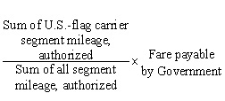
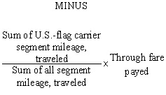

(a)
This part prescribes policies and procedures for-
(1)
Applying transportation and traffic management considerations in the acquisition of supplies; and
(2)
Acquiring transportation or transportation-related services by contract methods other than bills of lading, transportation requests, transportation warrants, and similar transportation forms. Transportation and transportation services can be obtained by acquisition subject to the FAR or by acquisition under 49 U.S.C. 10721 or 49 U.S.C. 13712. Even though the FAR does not regulate the acquisition of transportation or transportation-related services when the bill of lading is the contract, this contract method is widely used and, therefore, relevant guidance on the use of the bill of lading is provided in this part (see 47.104).
(b)
The definitions in this part have been condensed from statutory definitions. In case of inconsistency between the language of this part and the statutory requirements, the statute shall prevail.
47.001 Definitions.
As used in this part-
Bill of lading means a transportation document, used as a receipt of goods, as documentary evidence of title, for clearing customs, and generally used as a contract of carriage.
(1)
“Commercial bill of lading (CBL)”, unlike the Government bill of lading, is not an accountable transportation document.
(2)
“Government bill of lading (GBL)” is an accountable transportation document, authorized and prepared by a Government official.
Carrier or “commercial carrier” means a common carrier or a contract carrier.
Common carrier means a person holding itself out to the general public to provide transportation for compensation.
Contract carrier means a person providing transportation for compensation under continuing agreements with one person or a limited number of persons.
Government rate tender under 49 U.S.C. 10721 and 13712 means an offer by a common carrier to the United States at a rate below the regulated rate offered to the general public.
Household goods in accordance with 49 U.S.C. 13102 means personal effects and property used or to be used in a dwelling, when a part of the equipment or supply of such dwelling, and similar property if the transportation of such effects or property is arranged and paid for by-
(1) The householder, except such term does not include property moving from a factory or store, other than property that the householder has purchased with the intent to use in his or her dwelling and is transported at the request of, and the transportation charges are paid to the carrier by, the householder; or
(2) Another party.
Noncontiguous domestic trade means transportation (except with regard to bulk cargo, forest products, recycled metal scrap, waste paper, and paper waste) subject to regulation by the Surface Transportation Board involving traffic originating in or destined to Alaska, Hawaii, or a territory or possession of the United States (see 49 U.S.C. 13102(15) and 1 3702).
Released or declared value means the assigned value of the cargo for reimbursement purposes, not necessarily the actual value of the cargo. Released value may be more or less than the actual value of the cargo. The released value is the maximum amount that could be recovered by the agency in the event of loss or damage for the shipments of freight and household goods.
47.002 Applicability.
All Government personnel concerned with the following activities shall follow the regulations in part 47 as applicable:
(a)
Acquisition of supplies.
(b)
Acquisition of transportation and transportation-related services.
(c)
Transportation assistance and traffic management.
(d)
Administration of transportation contracts, transportation-related services, and other contracts that involve transportation.
(e)
The making and administration of contracts under which payments are made from Government funds for-
(1)
The transportation of supplies;
(2)
Transportation-related services; or
(3)
Transportation of contractor personnel and their personal belongings.
Subpart 47.1 - General
47.101 Policies.
(a)
For domestic shipments, the contracting officer shall authorize shipments on commercial bills of lading (CBL’s). Government bills of lading (GBL’s) may be used for international or noncontiguous domestic trade shipments or when otherwise authorized.
(b)
The contract administration office (CAO) shall ensure that instructions to contractors result in the most efficient and economical use of transportation services and equipment. Transportation personnel will assist and provide transportation management expertise to the CAO. Specific responsibilities and details on transportation management are located in the Federal Management Regulation at 41 CFR parts 102-117 and 102-118. (For the Department of Defense, DoD 4500.9-R, Defense Transportation Regulation.)
(c)
The contracting officer shall obtain traffic management advice and assistance (see 47.105) in the consideration of transportation factors required for-
(1)
Solicitations and awards;
(2)
Contract administration, modification, and termination; and
(3)
Transportation of property by the Government to and from contractors’ plants.
(d)
(1)
The preferred method of transporting supplies for the Government is by commercial carriers. However, Government-owned, leased, or chartered vehicles, aircraft, and vessels may be used if-
(i)
They are available and not fully utilized;
(ii)
Their use will result in substantial economies; and
(iii)
Their use is in accordance with all applicable statutes, agency policies and regulations.
(2)
If the three circumstances listed in paragraph (d)(1) of this section apply, Government vehicles may be used for purposes such as-
(i)
Local transportation of supplies between Government installations;
(ii)
Pickup and delivery services that commercial carriers do not perform in connection with line-haul transportation;
(iii)
Transportation of supplies to meet emergencies; and
(iv)
Accomplishment of program objectives that cannot be attained by using commercial carriers.
(e)
Agencies shall not accord preferential treatment to any mode of transportation or to any particular carrier either in awarding or administering contracts for the acquisition of supplies or in awarding contracts for the acquisition of transportation. (See subparts 47.2 and 47.3 for situations in which the contracting officer is permitted to use specific modes of transportation.)
(f)
Agencies shall place with small business concerns purchases and contracts for transportation and transportation-related services as prescribed in part 19.
(g)
Agencies shall comply with the Fly America Act, the Cargo Preference Act, and related statutes as prescribed in subparts 47.4, Air Transportation by U.S.-Flag Carriers, and 47.5, Ocean Transportation by U.S.-Flag Vessels.
(h)
When a contract specifies delivery of supplies f.o.b. origin with transportation costs to be paid by the Government, the contractor shall make shipments on bills of lading, or on other shipping documents prescribed by Military Surface Deployment and Distribution Command (SDDC) in the case of seavan containers, either at the direction of or furnished by the CAO or the appropriate agency transportation office.
47.102 Transportation insurance.
(a)
The Government generally-
(1)
Retains the risk of loss of and/or damage to its property that is not the legal liability of commercial carriers and
(2)
Does not buy insurance coverage for its property in the possession of commercial carriers (40 U.S.C.17307). (See part 28, Bonds and Insurance.)
(b)
Under special circumstances the Government may, if such action is considered necessary and in the Government’s interest, (1) buy insurance coverage for Government property or (2) require the carrier to (i) assume full responsibility for loss of or damage to the Government property in its possession and (ii) buy insurance to cover the carrier’s assumed responsibility. The cost of this insurance to the carrier shall be part of the transportation cost. (The Secretary of the Treasury prescribes regulations regarding shipments of valuables in 31 CFR parts 361 and 362.)
(c)
(1)
If special circumstances dictate the need for the Government to buy insurance coverage, the contracting officer shall ascertain that-
(i)
There is no statutory prohibition; and
(ii)
Funds for insurance are available.
(2)
The contracting officer shall document the need and authorization for insurance coverage in the contract file.
47.103 Transportation Payment and Audit Regulation.
47.103-1 General.
(a)
(1)
Regulations and procedures governing the bill of lading, documentation, payment, and audit of transportation services acquired by the United States Government are prescribed in 41 CFR part 102-118, Transportation Payment and Audit.
(2)
For DoD shipments, corresponding guidance is in DoD 4500.9-R, Defense Transportation Regulation, Part II.
(b)
Under 31 U.S.C. 3726, all agencies are required to establish a prepayment audit program. For details on the establishment of a prepayment audit, see 41 CFR part 102-118.
(c)
The agency designated in paragraph (a)(3) of the clause at 52.247-67 shall forward original copies of paid freight bills/invoices, bills of lading, passenger coupons, and supporting documents as soon as possible following the end of the month, in one package for postpayment audit to the General Services Administration, Transportation Audit Division (QMCA), Crystal Plaza 4, Room 300, 2200 Crystal Drive, Arlington, VA 22202. The specified agency shall include the paid freight bills/invoices, bills of lading, passenger coupons, and supporting documents for first-tier subcontractors under a cost-reimbursement contract. If the inclusion of the paid freight bills/invoices, bills of lading, passenger coupons, and supporting documents for any subcontractor in the shipment is not practicable, the documents may be forwarded to GSA in a separate package.
(d)
Any original transportation bills or other documents requested by GSA shall be forwarded promptly. The specified agency shall ensure that the name of the contracting agency is stamped or written on the face of the bill before sending it to GSA.
(e)
A statement prepared in duplicate by the specified agency shall accompany each shipment of transportation documents. GSA will acknowledge receipt of the shipment by signing and returning the copy of the statement. The statement shall show-
(1)
The name and address of the specified agency;
(2)
The contract number, including any alpha-numeric prefix identifying the contracting office;
(3)
The name and address of the contracting office;
(4)
The total number of bills submitted with the statement; and
(5)
A listing of the respective amounts paid or, in lieu of such listing, an adding machine tape of the amounts paid showing the Contractor’s voucher or check numbers.
47.103-2 Contract clause.
Complete and insert the clause at 52.247-67, Submission of Transportation Documents for Audit, in solicitations and contracts when a cost-reimbursement contract is contemplated and the contract or a first-tier cost-reimbursement subcontract thereunder will authorize reimbursement of transportation as a direct charge to the contract or subcontract.
47.104 Government rate tenders under sections 10721 and 13712 of the Interstate Commerce Act (49 U.S.C. 10721 and 13712).
(a)
This section explains statutory authority for common carriers subject to the jurisdiction of the Surface Transportation Board (motor carrier, water carrier, freight forwarder, rail carrier) to offer to transport persons or property for the account of the United States without charge or at “a rate reduced from the applicable commercial rate.” Reduced rates are offered in a Government rate tender. Additional information for civilian agencies is available in the Federal Management Regulation (41 CFR parts 102-117 and 102-118) and for DoD in the Defense Transportation Regulation (DoD 4500.9-R).
(b)
Reduced rates offered in a Government rate tender are authorized for transportation provided by a rail carrier, for the movement of household goods, and for movement by or with a water carrier in noncontiguous domestic trade.
(1)
For Government rate tenders submitted by a rail carrier, a rate reduced from the applicable commercial rate is a rate reduced from a rate regulated by the Surface Transportation Board.
(2)
For Government rate tenders submitted for the movement of household goods, “a rate reduced from the applicable commercial rate” is a rate reduced from a rate contained in a published tariff subject to regulation by the Surface Transportation Board.
(3)
For Government rate tenders submitted for movement by or with a water carrier in noncontiguous domestic trade, “a rate reduced from the applicable commercial rate” is a rate reduced from a rate contained in a published tariff required to be filed with the Surface Transportation Board.
47.104-1 Government rate tender procedures.
(a)49 U.S.C. 10721 and 1 3712 rates are published in Government rate tenders and apply to shipments moving for the account of the Government on-
(1)
Commercial bills of lading endorsed to show that total transportation charges are assignable to, and will be reimbursed by, the Government (see the clause at 52.247-1, Commercial Bill of Lading Notations); and
(2)
Government bills of lading.
(b)
Agencies may negotiate with carriers for additional or revised 49 U.S.C. 10721 and 1 3712 rates in appropriate situations. Only personnel authorized in agency procedures may carry out these negotiations. The following are examples of situations in which negotiations for additional or revised 49 U.S.C. 10721 and 1 3712 rates may be appropriate:
(1)
Volume movements are expected.
(2)
Shipments will be made on a recurring basis between designated places, and substantial savings in transportation costs appear possible even though a volume movement is not involved.
(3)
Transit arrangements are feasible and advantageous to the Government.
47.104-2 Fixed-price contracts.
(a)F.o.b. destination.49 U.S.C. 10721 and 1 3712 rates do not apply to shipments under fixed-price f.o.b. destination contracts (delivered price).
(b)F.o.b. origin.If it is advantageous to the Government, the contracting officer may occasionally require the contractor to prepay the freight charges to a specific destination. In such cases, the contractor shall use a commercial bill of lading and be reimbursed for the direct and actual transportation cost as a separate item in the invoice. The clause at 52.247-1, Commercial Bill of Lading Notations, will ensure that the Government in this type of arrangement obtains the benefit of 49 U.S.C. 10721 and 1 3712 rates.
47.104-3 Cost-reimbursement contracts.
(a)49 U.S.C. 10721 and 1 3712 rates may be applied to shipments other than those made by the Government if the total benefit accrues to the Government, i.e., the Government shall pay the charges or directly and completely reimburse the party that initially bears the freight charges. Therefore, 49 U.S.C. 10721 and 1 3712 rates may be used for shipments moving on commercial bills of lading in cost reimbursement contracts under which the transportation costs are direct and allowable costs under the cost principles of part 31.
(b)49 U.S.C. 10721 and 1 3712 rates may be applied to the movement of household goods and personal effects of contractor employees who are relocated for the convenience and at the direction of the Government and whose total transportation costs are reimbursed by the Government.
(c)
The clause at 52.247-1, Commercial Bill of Lading Notations, will ensure that the Government receives the benefit of lower 49 U.S.C. 10721 and 1 3712 rates in cost-reimbursement contracts as described in paragraphs (a) and (b) of this section.
(d)
Contracting officers shall-
(1)
Include in contracts a statement requiring the contractor to use carriers that offer acceptable service at reduced rates if available; and
(2)
Ensure that contractors receive the name and location of the transportation officer designated to furnish support and guidance when using Government rate tenders.
(e)
The transportation office shall-
(1)
Advise and assist contracting officers and contractors; and
(2)
Make available to contractors the names of carriers that provide service under 49 U.S.C. 10721 and 1 3712 rates, cite applicable rate tenders, and advise contractors of the statement that must be shown on the carrier’s commercial bill of lading (see the clause at 52.247-1, Commercial Bill of Lading Notations).
47.104-4 Contract clauses.
(a)
In order to ensure the application of 49 U.S.C. 10721 and 1 3712 rates, where authorized (see 47.104(b)), insert the clause at 52.247-1, Commercial Bill of Lading Notations, in solicitations and contracts when the contracts will be-
(1)
Cost-reimbursement contracts, including those that may involve the movement of household goods (see 47.104-3(b)); or
(2)
Fixed-price f.o.b. origin contracts (other than contracts at or below the simplified acquisition threshold) (see 47.104-2(b) and 47.104-3).
(b)
The contracting officer may insert the clause at 52.247-1, Commercial Bill of Lading Notations, in solicitations and contracts made at or below the simplified acquisition threshold when it is contemplated that the delivery terms will be f.o.b. origin.
47.104-5 Citation of Government rate tenders.
When 49 U.S.C. 10721 and 1 3712 rates apply, transportation offices or contractors, as appropriate, shall identify the applicable Government rate tender by endorsement on bills of lading.
47.105 Transportation assistance.
(a)
Civilian Government activities that do not have transportation officers, or otherwise need assistance on transportation matters, shall obtain assistance from-
(1)
The GSA Regional Federal Supply Service Bureau that provides support to the activity or
(2)
The transportation element of the contract administration office designated in the contract.
(b)
Military installations shall obtain transportation assistance from the transportation office of the contracting activity, unless another military activity has been designated as responsible for furnishing assistance, guidance, or data. Military transportation offices shall request needed additional aid from the Military Surface Deployment and Distribution Command (SDDC).
Subpart 47.2 - Contracts for Transportation or for Transportation-Related Services
47.200 Scope of subpart.
(a)
This subpart prescribes procedures for the acquisition by sealed bid or negotiated contracts of-
(1)
Freight transportation (including local drayage) from rail, motor (including bus), domestic water (including inland, coastwise, and intercoastal) carriers, and from freight forwarders; and
(2)
Transportation-related services including but not limited to stevedoring, storage, packing, marking, and ocean freight forwarding.
(b)
Except as provided in paragraph (c) of this section, this subpart does not apply to-
(1)
The acquisition of freight transportation from-
(2)
Freight transportation acquired by bills of lading;
(3)
Household goods for which rates are negotiated under 49 U.S.C. 10721 and 1 3712. (These statutes do not apply in intrastate moves); or
(4)
Contracts at or below the simplified acquisition threshold.
(c)
With appropriate modifications, the procedures in this subpart may be applied to the acquisition of freight transportation from the carriers listed in paragraph (b)(1) of this section and passenger transportation from any carrier or mode.
(d)
The procedures in this subpart are applicable to the transportation of household goods of persons being relocated at Government expense except when acquired-
(1)
Under the commuted rate schedules as required in the Federal Travel Regulation (41 CFR Chapter 302);
(2)
By DoD under the DoD 4500.9-R, Defense Transportation Regulation; or
(3)
Under 49 U.S.C. 10721 and 1 3712 rates. (These statutes do not apply in intrastate moves.)
(e)
Additional guidance for DoD acquisition of freight and passenger transportation is in the Defense Transportation Regulation.
47.201 Definitions.
As used in this subpart-
General freight means supplies, goods, and transportable property not encompassed in the definitions of “household goods” or “office furniture.”
Office furniture means furniture, equipment, fixtures, records, and other equipment and materials used in Government offices, hospitals, and similar establishments.
47.202 Presolicitation planning.
Contracting officers shall inform activities that plan to acquire transportation or transportation-related services of the applicable lead-time requirements, that is-
(a)
The Service Contract Labor Standards statute requirement to obtain a wage determination by accessing the Wage Determination OnLine website (http://www.wdol.gov) using the WDOL process or by submitting a request directly to the Department of Labor on this website using the e98 process before the issuance of an invitation for bid, request for proposal, or commencement of negotiations for any contract exceeding $2,500 that may be subject to the Service Contract Labor Standards statute (see subpart 22.10);
(b)
The possible requirement to provide, during the solicitation period, time for prospective offerors or contractors to inspect origin and destination locations; or
(c)
The possible requirement for inspection by agency personnel of prospective contractor facilities and equipment.
47.203 [Reserved]
47.204 Single-movement contracts.
Single-movement contracts may be awarded for unique transportation services that are not otherwise available under carrier tariffs or covered by DoD or GSA contracts; e.g., special requirements at origin and/or destination.
47.205 Availability of term contracts and basic ordering agreements for transportation or for transportation-related services.
(a)
All Government agencies may contract for transportation or for transportation-related services and execute basic ordering agreements (BOA’s) (see subpart 16.7) unless agency regulations prescribe otherwise. However, it is generally more economical and efficient for most agencies to make use of term contracts and basic ordering agreements that have been executed by agencies that employ personnel experienced in contracting for transportation or for transportation-related services. The Department of Defense (DoD) and the General Services Administration (GSA) contract for transportation or for transportation-related services on behalf of other activities and agencies. For instance, GSA awards term contracts for services such as local drayage, office moves, and ocean-freight forwarding (see 47.105 for assistance).
(b)
Agencies may obtain transportation or transportation-related services for which the cost does not exceed the simplified acquisition threshold if term contracts or basic ordering agreements are not available.
47.206 Preparation of solicitations and contracts.
(a)
Contracting officers shall prepare solicitations and contracts for transportation or for transportation-related services as prescribed elsewhere in the FAR for fixed-price service contracts to the extent that those requirements are applicable and not inconsistent with the requirements in subpart 47.2.
(b)
In addition, the contracting officer shall include in solicitations and contracts for transportation or for transportation-related services provisions, clauses, and instructions as prescribed in section 47.207.
47.207 Solicitation provisions, contract clauses, and special requirements.
The contracting officer shall include provisions, clauses, and special requirements in solicitations and contracts for transportation or for transportation-related services as prescribed in 47.207-1 through 47.207-9.
47.207-1 Qualifications of offerors.
(a)Operating authorities. The contracting officer shall insert the clause at 52.247-2, Permits, Authorities, or Franchises, when regulated transportation is involved. The clause need not be used when a Federal office move is intrastate and the contracting officer determines that it is in the Government’s interest not to apply the requirement for holding or obtaining State authority to operate within the State.
(b)
Performance capability for Federal office moving contracts.
(1)
The contracting officer shall insert the clause at 52.247-3, Capability to Perform a Contract for the Relocation of a Federal Office, when a Federal office is relocated, to ensure that offerors are capable to perform interstate or intrastate moving contracts involving the relocation of Federal offices.
(2)
If a Federal office move is intrastate and the contracting officer determines that it is in the Government’s interest not to apply the requirements for holding or obtaining State authority to operate within the State, and to maintain a facility within the State or commercial zone, the contracting officer shall use the clause with its AlternateI.
(c)Inspection of shipping and receiving facilities. The contracting officer shall insert the provision at 52.247-4, Inspection of Shipping and Receiving Facilities, when it is desired for offerors to inspect the shipping, receiving, or other sites to ensure realistic bids.
(d)Familiarization with conditions. The contracting officer shall insert the clause at 52.247-5, Familiarization with Conditions, to ensure that offerors become familiar with conditions under which and where the services will be performed.
(e)Financial statement. The contracting officer shall insert the provision at 52.247-6, Financial Statement, to ensure that offerors are prepared to furnish financial statements.
47.207-2 Duration of contract and time of performance.
The contracting officer shall-
(a)
Establish a specific expiration date (month, day, and year) for the contract or state the length of time that the contract will remain in effect; e.g.,6 months commencing from the date of award; and
(b)
Include the following items as appropriate:
(1)
A statement of the time period during which the service is required when the service is a one-time job; e.g.,a routine office relocation.
(2)
A time schedule for the performance of segments of a major job; e.g., an office relocation for which the work phases must be coordinated to meet other needs of the agency.
(3)
Statements of performance times for particular services; e.g., pickup and delivery services. Specify-
(i)
On which days of the week and during which hours of the day pickup and delivery services may be required;
(ii)
The maximum time allowable to the contractor for accomplishing delivery under regular or priority service; and
(iii)
How much advance notice the contractor will be given for regular pickup services and, if applicable, priority pickup services.
47.207-3 Description of shipment, origin, and destination.
(a)Origin of shipments. The contracting officer shall include in solicitations full details regarding the location from which the freight is to be shipped. For example, if a single location is shown, furnish the shipper’s name, street address, city, State, and ZIP code. If several or indefinite locations are involved, as in the case of multiple shippers or drayage contracts, describe the area of origin including boundaries and ZIP codes.
(b)Destination of shipments. The contracting officer shall include full details regarding delivery points. For example, if a single delivery point is shown, furnish the consignee’s name, street address, city, State, and ZIP code. If several or indefinite delivery points are involved, describe the delivery area, including boundaries and ZIP codes.
(c)Description of the freight. The contracting officer shall include in solicitations-
(1)
An inventory if the freight consists of nonbulk items; and
(2)
The freight classification description, which should be obtained from the transportation office. If a freight classification description is not available, use a clear nontechnical description. Include additional details necessary to ensure that the prospective offerors have complete information about the freight; e.g., size, weight, hazardous material, whether packed for export, or unusual value.
(d)Exclusion of freight. The contracting officer shall-
(1)
Clearly identify any freight or types of shipments that are subject to exclusion; e.g., bulk freight, hazardous commodities, or shipments under or over specified weights; and
(2)
Insert a clause substantially the same as the clause at 52.247-7, Freight Excluded, when any commodities or types of shipments have been identified for exclusion.
(e)
Quantity.
(1)
The contracting officer shall state the actual weight of the freight or a reasonably accurate estimate. The following are examples:
(i)
If the contract covers transportation services required over an extended period of time, include a schedule of actual or estimated tonnage or number of items to be transported per week, month, or other time period.
(ii)
If the contract covers a group movement of household goods, give an estimate of the aggregate weights and the basis for determining the aggregate weight.
(2)
The contracting officer shall insert the clause at 52.247-8, Estimated Weights or Quantities Not Guaranteed, when weights or quantities are estimates.
47.207-4 Determination of Weights.
The contracting officer shall specify in the contract the method of determining the weights of shipments as appropriate for the kind of freight involved and the type of service required.
(a)Shipments of freight other than household goods and office furniture.
(1)
The contracting officer shall insert the clause at 52.247-9, Agreed Weight—General Freight, when the shipping activity determines the weight of shipments of freight other than household goods or office furniture.
(2)
The contracting officer shall insert the clause at 52.247-10, Net Weight—General Freight, when the weight of shipments of freight other than household goods or office furniture is not known at the time of shipment and the contractor is responsible for determining the net weight of the shipments.
(b)Shipments of household goods or office furniture. The contracting officer shall insert the clause at 52.247-11, Net Weight—Household Goods or Office Furniture, when movements of Government employees' household goods or relocations of Government offices are involved.
47.207-5 Contractor responsibilities.
Contractor responsibilities vary with the kinds of freight to be shipped and services required. The contracting officer shall specify clearly those service requirements that are not considered normal transportation or transportation-related requirements.
(a)Type of equipment. If appropriate, the contracting officer shall specify the type and size of equipment to be furnished by the contractor. Otherwise, state that the contractor shall furnish clean and sound closed-type equipment of sufficient size to accommodate the shipment.
(b)Supervision, labor, or materials.The contracting officer shall insert a clause substantially the same as the clause at 52.247-12, Supervision, Labor, or Materials, when the contractor is required to furnish supervision, labor, or materials.
(c)Accessorial services-moving contracts.The contracting officer shall insert a clause substantially the same as the clause at 52.247-13, Accessorial Services-Moving Contracts, in contracts for the transportation of household goods or office furniture.
(d)Receipt of shipment.The contracting officer shall insert the clause at 52.247-14, Contractor Responsibility for Receipt of Shipment.
(e)Loading and unloading.The contracting officer shall insert the clause at 52.247-15, Contractor Responsibility for Loading and Unloading, when the contractor is responsible for loading and unloading shipments.
(f)Return of undelivered freight.The contracting officer shall insert the clause at 52.247-16, Contractor Responsibility for Returning Undelivered Freight, when the contractor is responsible for returning undelivered freight.
47.207-6 Rates and charges.
(a)
(1)
The contracting officer shall include in the solicitation a statement that the charges in the contract shall not exceed the contractor’s charges for the same service that is-
(i)
Available to the general public; or
(ii)
Otherwise tendered to the Government.
(2)
The contracting officer shall insert the clause at 52.247-17, Charges.
(b)
The contracting officer shall include in the solicitation a tabulation listing each required service and the basis for the rate (price); e.g.,“unit of weight” or “per work-hour,” leaving sufficient space for offerors to insert the rates offered for each service.
(c)
The following guidelines apply to the composition of a tabulation of transportation or of transportation-related services and their rate (price) bases:
(1)Combination of pricing bases.If various types of services with different bases for assessing charges are required under the same contract, show each service separately and the applicable basis for that service.
(2)Hourly rate basis.If charges are based on an hourly rate, state the method for charging for fractions of an hour; e.g.-
(i)
A period of 30 minutes or less is charged at one-half the hourly rate; and
(ii)
The hourly rate applies to any portion of an hour that exceeds 30 minutes.
(3)Shipments of varying weights.If charges are based on weight and shipments will vary in weight, request rates on a graduated weight basis. Include a table of graduated weights for offerors to insert rates.
(4)Multiple origins and/or destinations.Specify whether rates are requested for each origin and/or each destination or for specific groups of origins and/or destinations.
(5)Multiple shipments from one origin.If multiple shipments will be tendered at one time to the contractor for delivery to two or more consignees at the same destination, request the rate applicable to the aggregate weight. If such shipments are for delivery to various destinations along the route between origin and last destination, request the rate applicable to the aggregate weight and a stopoff charge for each intermediate destination.
(i)
The contracting officer shall insert the clause at 52.247-18, Multiple Shipments, when multiple shipments are tendered at one time to the contractor for transportation from one origin to two or more consignees at the same destination.
(ii)
The contracting officer shall insert the clause at 52.247-19, Stopping in Transit for Partial Unloading, when multiple shipments are tendered at one time to the contractor for transportation from one origin to two or more consignees along the route between origin and last destination.
(6)Estimated quantities or weights.The contracting officer shall insert in solicitations the provision at 52.247-20, Estimated Quantities or Weights for Evaluation of Offers, when quantities or weights of shipments between each origin and destination are not known, stating estimated quantity or weight for each origin/destination pair.
(7)Additional services.If services in addition to those covered in the basic rate are anticipated; e.g., inside delivery, state the conditions under which payment will be made for those services.
47.207-7 Liability and insurance.
(a)
The contracting officer shall specify-
(1)
The contractor’s liability for injury to persons or damage to property other than the freight being transported;
(2)
The contractor’s liability for loss of and/or dam- age to the freight being transported; and
(3)
The amount of insurance the contractor is required to maintain.
(b)
When the contractor’s liability for loss of and/or damage to the freight being transported is not specified, the usual measure of liability as prescribed in section 11706 of the Interstate Commerce Act (49 U.S.C.11706) applies.
(c)
The contracting officer shall insert the clause at 52.247-21, Contractor Liability for Personal Injury and/or Property Damage.
(d)
The contracting officer shall insert the clause at 52.247-22, Contractor Liability for Loss of and/or Damage to Freight other than Household Goods, in solicitations and contracts for the transportation of freight other than household goods.
(e)
The contracting officer shall insert the clause at 52.247-23, Contractor Liability for Loss of and/or Damage to Household Goods, in solicitations and contracts for the transportation of household goods, including the rate per pound appropriate to the situation.
(f)
When freight is not shipped under rates subject to released or declared value, see 28.313(a) and the clause at 52.228-9, Cargo Insurance.
(g)
When the contracting officer determines that vehicular liability and/or general public liability insurance required by law are not sufficient for a contract, see 28.313(b) and the clause at 52.228-10, Vehicular and General Public Liability Insurance.
47.207-8 Government responsibilities.
(a)
The contracting officer shall state clearly the Government’s responsibilities that have a direct bearing on the contractor’s performance under the contract; e.g., the Government’s responsibility to notify the contractor in advance when hazardous materials are included in a shipment.
(1)Advance notification.The contracting officer shall insert the clause at 52.247-24, Advance Notification by the Government, when the Government is responsible for notifying the contractor of specific service times or unusual shipments.
(2)
Government equipment with or without operators.
(i)
The contracting officer shall insert the clause at 52.247-25, Government-Furnished Equipment With or Without Operators, when the Government furnishes equipment with or without operators.
(ii)
Insert the kind of equipment and the locations where the equipment will be furnished.
(3)Direction and marking.The contracting officer shall insert the clause at 52.247-26, Government Direction and Marking, when office relocations are involved.
(b)
The contracting officer shall insert the clause at 52.247-27, Contract Not Affected by Oral Agreement.
47.207-9 Annotation and distribution of shipping and billing documents.
(a)
The contracting officer shall state in detail the responsibilities of the contractor, the contracting agency, and, if appropriate, the consignee for the annotation and distribution of shipping and billing documents. See 41 CFR part 102-118, Transportation Payment and Audit.
(b)
In instances of mass movements of freight made available to the contractor at one time, it is particularly important that the contracting officer specifies that bills of lading be cross-referenced so that the Government benefits from applicable volume rates.
(c)
The contracting officer shall insert the clause at 52.247-28, Contractor’s Invoices, in drayage or other term contracts.
47.207-10 Discrepancies incident to shipments.
Discrepancies incident to shipment include overage, shortage, loss, damage, and other discrepancies between the quantity and/or condition of supplies received from commercial carrier and the quantity and/or condition of these supplies as shown on the covering bill of lading or other transportation document. Regulations and procedures for reporting and adjusting discrepancies in Government shipments are in 41 CFR parts 102-117 and 118. (For the Department of Defense (DoD), see DoD 4500.9-R, Defense Transportation Regulation, Part II, Chapter 210).
47.207-11 Volume movements within the contiguous United States.
(a)
For purposes of contract administration, a volume movement is-
(1)
In DoD, the aggregate of freight shipments amounting to or exceeding 25 carloads, 25 truckloads, or 500,000 pounds, to move during the contract period from one origin point for delivery to one destination point or area; and
(2)
In civilian agencies, 50 short tons (100,000 pounds) in the aggregate to move during the contract period from one origin point for delivery to one destination point or area.
(b)
Transportation personnel assigned to or supporting the CAO, or appropriate agency personnel, shall report planned and actual volume movements in accordance with agency regulations. DoD activities report to the Military Surface Deployment and Distribution Command (SDDC) under DoD 4500.9-R, Defense Transportation Regulation. Civilian agencies report to the local office of GSA’s Office of Transportation (see www.gsa.gov/transportation(click on Transportation Management Zone Offices in left-hand column, then click on Transportation Management Zones under Contacts on right-hand column).
47.208 Report of shipment (REPSHIP).
47.208-1 Advance notice.
Military (and as required, civilian agency) storage and distribution points, depots, and other receiving activities require advance notice of shipments en route from contractors’ plants. Generally, this notification is required only for classified material; sensitive, controlled, and certain other protected material; explosives, and some other hazardous materials; selected shipments requiring movement control; or minimum carload or truckload shipments. It facilitates arrangements for transportation control, labor, space, and use of materials handling equipment at destination. Also, timely receipt of notices by the consignee transportation office precludes the incurring of demurrage and vehicle detention charges.
47.208-2 Contract clause.
The contracting officer shall insert the clause at 52.247-68, Report of Shipment (REPSHIP), in solicitations and contracts when advance notice of shipment is required for safety or security reasons, or where carload or truckload shipments will be made to DoD installations or, as required, to civilian agency facilities.
Subpart 47.3 - Transportation in Supply Contracts
47.300 Scope of subpart.
(a)
This subpart prescribes policies and procedures for the application of transportation and traffic management considerations in the acquisition of supplies. The terms and conditions contained in this subpart are applicable to fixed-price contracts.
(b)
If a special requirement exists for application of any of these terms and conditions to other types of contracts; e.g., cost-reimbursement contracts, for which transportation arrangements are normally the responsibility of the contractor and transportation costs are allowable, the contracting officer shall use the terms and conditions prescribed in this subpart as a guide for-
(1)
Contract coverage of transportation; and
(2)
Instructions to the contractor to minimize the ultimate transportation costs to the Government.
47.301 General.
(a)
Transportation and traffic management factors are important in awarding and administering contracts to ensure that (1) acquisitions are made on the basis most advantageous to the Government and (2) supplies arrive in good order and condition and on time at the required place. (See 47.104 for possible reduced transportation rates for Government shipments.)
(b)
The requiring activity shall-
(1)
Consider all transportation factors including present and future requirements, positioning of supplies, and subsequent distribution to the extent known or ascertainable; and
(2)
Provide the contracting office with information and instructions reflecting transportation factors applicable to the particular acquisition.
47.301-1 Responsibilities of contracting officers.
(2)
Contract administration, modification, and termination, including the movement of property by the Government to and from contractors’ plants.
(b)
Contracting officers shall request transportation office participation especially before making an initial acquisition of supplies that are unusually large, heavy, high, wide, or long; have sensitive or dangerous characteristics; or lend themselves to containerized movements from the source. In determining total transportation charges, contracting officers shall also consider additional costs arising from factors such as the use of special equipment, excess blocking and bracing material, or circuitous routing.
47.301-2 Participation of transportation officers.
Agencies’ transportation officers shall participate in the solicitation and evaluation of offers to ensure that all necessary transportation factors, such as transportation costs, transit arrangements, time in transit, and port capabilities, are considered and result in solicitations and contracts advantageous to the Government. Transportation officers shall provide traffic management assistance throughout the acquisition cycle (see 47.105, Transportation assistance).
47.301-3 Using the Defense Transportation System (DTS).
(a)
All military and civilian agencies shipping, or arranging for the acquisition and shipment by Government contractors, through the use of military-controlled transport or through military transshipment facilities shall follow Department of Defense (DoD) Regulation DoD 4500.9-R, Defense Transportation Regulation Part II. This establishes uniform procedures and documents for the generation, documentation, communication, and use of transportation information, thus providing the capability for control of shipments moving in the DTS. DoD 4500.9-R, Defense Transportation Regulation Part II has been implemented on a world-wide basis.
(b)
Contracting activities are responsible for (1) ensuring that the requirements of the DoD 4500.9-R, Defense Transportation Regulation Part II regulation are included in appropriate contracts for all applicable shipments and (2) enforcing these requirements with regard to shipments under their control. This includes requirements relating to documentation, marking, advance notification of shipment dates, and terminal clearances.
(c)
Contractual documents shall designate a contract administration office (see 42.202(a)) as the contact point to which the contractor will provide necessary information to-
(1)
Effect DoD 4500.9-R, Defense Transportation Regulation Part II documentation and movement control, including air or water terminal shipment clearances; and
(2)
Obtain data necessary for shipment marking and freight routing. Contractual documents shall specify that the contractor shall not ship directly to a military air or water port terminal without authorization from the designated contract administration office (see 47.305-6(f)).
47.302 Place of delivery-f.o.b. point.
(a)
The policies and procedures in 47.304-1, -2, and -3 govern the transportation of supplies from sources in the Contiguous United States (CONUS), except when identifiable costs, nature of the supplies (security, safety, or value), delivery requirements (premium modes of transport, escorts, transit arrangements, and tentative conditions), or other advantages, limitations, or requirements dictate otherwise. The policies and procedures in 47.304-4 govern the transportation of supplies from sources outside CONUS.
(b)
Generally, the contracting officer shall solicit offers, and award contracts, with delivery terms on the basis prescribed in 47.304. The contracting officer shall document the contract file (see 4.801) with justifications for solicitations that do not specify delivery on the basis prescribed in 47.304.
(c)
(1)
The place of performance of Government acquisition quality assurance actions and the place of acceptance shall not control the delivery term, except that if acceptance is at destination, transportation shall be f.o.b. destination (see 47.304-1(f)).
(2)
The fact that transportation is f.o.b. destination does not alone necessitate changing the place of acceptance from origin to destination; and the fact that acceptance is at origin does not necessitate an f.o.b. origin delivery term. Providing for inspection and acceptance at origin (if appropriate under 46.402), in conjunction with an f.o.b. destination term, may be advantageous to both the Government and the contractor. Acceptance of title at origin by the Government permits payment of the contractor, provided the invoice is supported either by a copy of the signed commercial bill of lading (indicating the carrier’s receipt of the supplies covered by the invoice for transportation to the particular destination specified in the contract) or by other appropriate evidence of shipment to the particular destination for the contractor’s account.
47.303 Standard delivery terms and contract clauses.
Standard delivery terms are listed in 47.303-1 through 47.303-16 (but see 47.300 regarding applicability to cost reimbursement contracts).
47.303-1 F.o.b. origin.
(a)Explanation of delivery term.“F.o.b. origin” means free of expense to the Government delivered-
(1)
On board the indicated type of conveyance of the carrier (or of the Government, if specified) at a designated point in the city, county, and State from which the shipment will be made and from which line-haul transportation service (as distinguished from switching, local drayage, or other terminal service) will begin;
(2)
To, and placed on, the carrier’s wharf (at shipside, within reach of the ship’s loading tackle, when the shipping point is within a port area having water transportation service) or the carrier’s freight station;
(3)
To a U.S. Postal Service facility; or
(4)
If stated in the solicitation, to any Government-designated point located within the same city or commercial zone as the f.o.b. origin point specified in the contract (the Federal Motor Carrier Safety Administration prescribes commercial zones at Subpart B of 49 CFR part 372).
(i)
Pack and mark the shipment to comply with contract specifications; or
(ii)
In the absence of specifications, prepare the shipment in conformance with carrier requirements to protect the goods and to ensure assessment of the lowest applicable transportation charge;
(2)
(i)
Order specified carrier equipment requested by the Government; or
(ii)
If not specified, order appropriate carrier equipment not in excess of capacity to accommodate shipment;
(3)
Deliver the shipment in good order and condition to the carrier, and load, stow, trim, block, and/or brace carload or truckload shipment (when loaded by the contractor) on or in the carrier’s conveyance as required by carrier rules and regulations;
(4)
Be responsible for any loss of and/or damage to the goods-
(i)
Occurring before delivery to the carrier;
(ii)
Resulting from improper packing and marking; or
(iii)
Resulting from improper loading, stowing, trimming, blocking, and/or bracing of the shipment, if loaded by the contractor on or in the carrier’s conveyance;
(5)
Complete the Government bill of lading supplied by the ordering agency or, when a Government bill of lading is not supplied, prepare a commercial bill of lading or other transportation receipt. The bill of lading shall show-
(i)
A description of the shipment in terms of the governing freight classification or tariff (or Government rate tender) under which lowest freight rates are applicable;
(ii)
The seals affixed to the conveyance with their serial numbers or other identification;
(iii)
Lengths and capacities of cars or trucks ordered and furnished;
(iv)
Other pertinent information required to effect prompt delivery to the consignee, including name, delivery address, postal address and ZIP code of consignee, routing, etc.;
(v)
Special instructions or annotations requested by the ordering agency for commercial bills of lading; e.g., “This shipment is the property of, and the freight charges paid to the carrier(s) will be reimbursed by, the Government” ; and
(vi)
The signature of the carrier’s agent and the date the shipment is received by the carrier; and
(6)
Distribute the copies of the bill of lading, or other transportation receipts, as directed by the ordering agency.
(c)Contract clause.The contracting officer shall insert in solicitations and contracts the clause at 52.247-29, F.o.b. Origin, when the delivery term is f.o.b. origin.
47.303-2 F.o.b. origin, contractor’s facility.
(a)Explanation of delivery term.“F.o.b. origin, contractor’s facility” means free of expense to the Government delivered on board the indicated type of conveyance of the carrier (or of the Government if specified) at the designated facility, on the named street or highway, in the city, county, and State from which the shipment will be made.
(b)Contractor responsibilities.The contractor’s responsibilities are the same as those listed in 47.303-1(b).
(c)Contract clause.The contracting officer shall insert in solicitations and contracts the clause at 52.247-30, F.o.b. Origin, Contractor’s Facility, when the delivery term is f.o.b. origin, contractor’s facility.
47.303-3 F.o.b. origin, freight allowed.
(a)Explanation of delivery term.“F.o.b. origin, freight allowed” means-
(1)
Free of expense to the Government delivered-
(i)
On board the indicated type or conveyance of the carrier (or of the Government, if specified) at a designated point in the city, county, and State from which the shipments will be made and from which line-haul transportation service (as distinguished from switching, local drayage, or other terminal service) will begin;
(ii)
To, and placed on, the carrier’s wharf (at shipside, within reach of the ship’s loading tackle, when the shipping point is within a port area having water transportation service) or the carrier’s freight station;
(iii)
To a U.S. Postal Service facility; or
(iv)
If stated in the solicitation, to any Government-designated point located within the same city or commercial zone as the f.o.b. origin point specified in the contract (the Federal Motor Carrier Safety Administration prescribes commercial zones at Subpart B of 49 CFR part 372); and
(2)
An allowance for freight, based on applicable published tariff rates (or Government rate tenders) between the points specified in the contract, is deducted from the contract price.
(b)Contractor responsibilities.The contractor’s responsibilities are the same as those listed in 47.303-1(b).
(c)Contract clause.The contracting officer shall insert in solicitations and contracts the clause at 52.247-31, F.o.b. Origin, Freight Allowed, when the delivery term is f.o.b. origin, freight allowed.
47.303-4 F.o.b. origin, freight prepaid.
(a)Explanation of delivery term.“F.o.b. origin, freight prepaid” means-
(1)
Free of expense to the Government delivered-
(i)
On board the indicated type of conveyance of the carrier (or of the Government, if specified) at a designated point in the city, county, and State from which the shipments will be made and from which line-haul transportation service (as distinguished from switching, local drayage, or other terminal service) will begin;
(ii)
To, and placed on, the carrier’s wharf (at shipside, within reach of the ship’s loading tackle, when the shipping point is within a port area having water transportation service) or the carrier’s freight station;
(iii)
To a U.S. Postal Service facility; or
(iv)
If stated in the solicitation, to any Government-designated point located within the same city or commercial zone as the f.o.b. origin point specified in the contract (the Federal Motor Carrier Safety Administration prescribes commercial zones at Subpart B of 49 CFR part 372); and
(2)
The cost of transportation, ultimately the Government’s obligation, is prepaid by the contractor to the point specified in the contract.
(b)Contractor responsibilities.The contractor’s responsibilities are the same as those listed in 47.303-1(b), except that the contractor shall prepare commercial bills of lading or other transportation receipts and shall prepay all freight charges to the extent specified in the contract.
(c)Contract clause.The contracting officer shall insert in solicitations and contracts the clause at 52.247-32, F.o.b. Origin, Freight Prepaid, when the delivery term is f.o.b. origin, freight prepaid.
47.303-5 F.o.b. origin, with differentials.
(a)Explanation of delivery term.“F.o.b. origin, with differentials” means-
(1)
Free of expense to the Government delivered-
(i)
On board the indicated type of conveyance of the carrier (or of the Government, if specified) at a designated point in the city, county, and State from which the shipments will be made and from which line-haul transportation service (as distinguished from switching, local drayage, or other terminal service) will begin;
(ii)
To, and placed on, the carrier’s wharf (at shipside, within reach of the ship’s loading tackle, when the shipping point is within a port area having water transportation service) or the carrier’s freight station;
(iii)
To a U.S. Postal Service facility; or
(iv)
If stated in the solicitation, to any Government-designated point located within the same city or commercial zone as the f.o.b. origin point specified in the contract (the Federal Motor Carrier Safety Administration prescribes commercial zones at Subpart B of 49 CFR part 372); and
(2)
Differentials for mode of transportation, type of vehicle, or place of delivery as indicated in contractor’s offer may be added to the contract price.
(b)Contractor responsibilities.The contractor’s responsibilities are the same as those listed in 47.303-1(b).
(c)Contract clause. Insert in solicitations and contracts the clause at 52.247-33, F.o.b. Origin, with Differentials, when it is likely that offerors may include in f.o.b. origin offers a contingency to compensate for unfavorable routing conditions by the Government at the time of shipment.
47.303-6 F.o.b. destination.
(a)Explanation of delivery term.“F.o.b. destination”- means-
(1)
Free of expense to the Government delivered, on board the carrier’s conveyance, at a specified delivery point where the consignee’s facility (plant, warehouse, store, lot, or other location to which shipment can be made) is located; and
(2)
Supplies shall be delivered to the destination consignee’s wharf (if destination is a port city and supplies are for export), warehouse unloading platform, or receiving dock, at the expense of the contractor. The Government shall not be liable for any delivery, storage, demurrage, accessorial, or other charges involved before the actual delivery (or “constructive placement” as defined in carrier tariffs) of the supplies to the destination, unless such charges are caused by an act or order of the Government acting in its contractual capacity. If rail carrier is used, supplies shall be delivered to the specified unloading platform of the consignee. If motor carrier (including “piggyback”) is used, supplies shall be delivered to truck tailgate at the unloading platform of the consignee, except when the supplies delivered meet the requirements of Item568 of the National Motor Freight Classification for “heavy or bulky freight.” When supplies meeting the requirements of the referenced Item568 are delivered, unloading (including movement to the tailgate) shall be performed by the consignee, with assistance from the truck driver, if requested. If the contractor uses rail carrier or freight forwarder for less than carload shipments, the contractor shall ensure that the carrier will furnish tailgate delivery when required, if transfer to truck is required to complete delivery to consignee.
(i)
Pack and mark the shipment to comply with contract specifications; or
(ii)
In the absence of specifications, prepare the shipment in conformance with carrier requirements;
(2)
Prepare and distribute commercial bills of lading;
(3)
Deliver the shipment in good order and condition to the point of delivery specified in the contract;
(4)
Be responsible for any loss of and/or damage to the goods occurring before receipt of the shipment by the consignee at the delivery point specified in the contract;
(5)
Furnish a delivery schedule and designate the mode of delivering carrier; and
(6)
Pay and bear all charges to the specified point of delivery.
(c)Contract clause.The contracting officer shall insert in solicitations and contracts the clause at 52.247-34, F.o.b. Destination, when the delivery term is f.o.b. destination.
47.303-7 F.o.b. destination, within consignee’s premises.
(a)Explanation of delivery term.“F.o.b. destination, within consignee’s premises” means free of expense to the Government delivered and laid down within the doors of the consignee’s premises, including delivery to specific rooms within a building if so specified.
(b)Contractor responsibilities.The contractor’s responsibilities are the same as those listed in 47.303-6(b).
(c)Contract clause.The contracting officer shall insert in solicitations and contracts the clause at 52.247-35, F.o.b. Destination, within Consignee’s Premises, when the delivery term is f.o.b. destination, within consignee’s premises.
47.303-8 F.a.s. vessel, port of shipment.
(a)Explanation of delivery term.“F.a.s. vessel, port of shipment” means free of expense to the Government delivered alongside the ocean vessel and within reach of its loading tackle at the specified port of shipment.
(i)
Pack and mark the shipment to comply with contract specifications; or
(ii)
In the absence of specifications, prepare the shipment for ocean transportation in conformance with carrier requirements to protect the goods and to ensure assessment of the lowest applicable transportation charge;
(2)
(i)
Deliver the shipment in good order and condition alongside the ocean vessel and within reach of its loading tackle, at the point of delivery and on the date or within the period specified in the contract; and
(ii)
Pay and bear all applicable charges, including transportation costs, wharfage, handling, and heavy lift charges, if necessary, up to this point;
(3)
Provide a clean dock or ship’s receipt;
(4)
Be responsible for any loss of and/or damage to the goods occurring before delivery of the shipment to the point specified in the contract; and
(5)
At the Government’s request and expense, assist in obtaining the documents required for-
(i)
Exportation; or
(ii)
Importation at destination.
(c)Contract clause.The contracting officer shall insert in solicitations and contracts the clause at 52.247-36, F.a.s. Vessel, Port of Shipment, when the delivery term is f.a.s. vessel, port of shipment.
47.303-9 F.o.b. vessel, port of shipment.
(a)Explanation of delivery term.“F.o.b. vessel, port shipment” means free of expense to the Government loaded, stowed, and trimmed on board the ocean vessel at the specified port of shipment.
(b)Contractor responsibilities. The contractor shall-
(1)
(i)
Pack and mark the shipment to comply with contract specifications; or
(ii)
In the absence of specifications, prepare the shipment for ocean transportation in conformance with carrier requirements to protect the goods and to ensure assessment of the lowest applicable transportation charge;
(2)
(i)
Deliver the shipment on board the ocean vessel in good order and condition on the date or within the period fixed; and
(ii)
Pay and bear all charges incurred in placing the shipment actually on board;
(3)
Provide a clean ship’s receipt or on-board ocean bill of lading;
(4)
Be responsible for any loss of and/or damage to the goods occurring before delivery of the shipment on board the ocean vessel; and
(5)
At the Government’s request and expense, assist in obtaining the documents required for-
(i)
Exportation; or
(ii)
Importation at destination.
(c)Contract clause. The contracting officer shall insert in solicitations and contracts the clause at 52.247-37, F.o.b. Vessel, Port of Shipment, when the delivery term is f.o.b. vessel, port of shipment.
47.303-10 F.o.b. inland carrier, point of exportation.
(a)Explanation of delivery term.“F.o.b. inland carrier, point of exportation” means free of expense to the Government, on board the conveyance of the inland carrier, delivered to the specified point of exportation.
(i)
Pack and mark the shipment to comply with contract specifications; or
(ii)
In the absence of specifications, prepare the shipment for ocean transportation in conformance with carrier requirements to protect the goods and to ensure assessment of the lowest applicable transportation charge;
(2)
Prepare and distribute commercial bills of lading;
(3)
(i)
Deliver the shipment in good order and condition in or on the conveyance of the carrier on the date or within the period specified; and
(ii)
Pay and bear all applicable charges, including transportation costs, to the point of delivery specified in the contract;
(4)
Be responsible for any loss of and/or damage to the goods occurring before delivery of the shipment to the point of delivery specified in the contract; and
(5)
At the Government’s request and expense, assist in obtaining the documents required for-
(i)
Exportation; or
(ii)
Importation at destination.
(c)Contract clause.The contracting officer shall insert in solicitations and contracts the clause at 52.247-38, F.o.b. Inland Carrier, Point of Exportation, when the delivery term is f.o.b. inland carrier, point of exportation.
47.303-11 F.o.b. inland point, country of importation.
(a)Explanation of delivery term.“F.o.b. inland point, country of importation” means free of expense to the Government, on board the indicated type of conveyance of the carrier, delivered to the specified inland point where the consignee’s facility is located.
(i)
Pack and mark the shipment to comply with contract specifications; or
(ii)
In the absence of specifications, prepare the shipment for ocean transportation in conformance with carrier requirements to protect the goods;
(2)
(i)
Deliver, in or on the inland carrier’s conveyance, the shipment in good order and condition to the specified inland point where the consignee’s facility is located;
(ii)
Pay and bear all applicable charges incurred up to the point of delivery, including transportation costs; export, import, or other fees or taxes; costs of landing; wharfage costs; customs duties and costs of certificates of origin; consular invoices; and other documents that may be required for importation; and
(3)
Be responsible for any loss of and/or damage to the goods until their arrival on or in the carrier’s conveyance at the specified inland point.
(c)Contract clause.The contracting officer shall insert in solicitations and contracts the clause at 52.247-39, F.o.b. Inland Point, Country of Importation, when the delivery term is f.o.b. inland point, country of importation.
47.303-12 Ex dock, pier, or warehouse, port of importation.
(a)Explanation of delivery term.“Ex dock, pier, or warehouse, port of importation” means free of expense to the Government delivered on the designated dock or pier or in the warehouse at the specified port of importation.
(i)
Pack and mark the shipment to comply with contract specifications; or
(ii)
In the absence of specifications, prepare the shipment for ocean transportation in conformance with carrier requirements to protect the goods;
(2)
(i)
Deliver shipment in good order and condition; and
(ii)
Pay and bear all charges up to the point of delivery specified in the contract, including transportation costs; export, import, or other fees or taxes; costs of wharfage and landing, if any; customs duties; and costs of certificates of origin, consular invoices, or other documents that may be required for exportation or importation; and
(3)
Be responsible for any loss of and/or damage to the goods occurring before delivery of the shipment to the point of delivery specified in the contract.
(c)Contract clause.The contracting officer shall insert in solicitations and contracts the clause at 52.247-40, Ex Dock, Pier, or Warehouse, Port of Importation, when the delivery term is ex dock, pier, or warehouse, port of importation.
47.303-13 C. & f. destination.
(a)Explanation of delivery term.“C.&f. (cost & freight) destination” means free of expense to the Government delivered on board the ocean vessel to the specified point of destination, with the cost of transportation paid by the contractor.
(i)
Pack and mark the shipment to comply with contract specifications; or
(ii)
In the absence of specifications, prepare the shipment for ocean transportation in conformance with carrier requirements;
(2)
(i)
Deliver the shipment in good order and condition; and
(ii)
Pay and bear all applicable charges to the point of destination specified in the contract, including transportation costs and export taxes or other fees or charges levied because of exportation;
(3)
Obtain and dispatch promptly to the Government clean on-board ocean bills of lading to the specified point of destination.
(4)
Be responsible for any loss of and/or damage to the goods occurring before delivery; and
(5)
At the Government’s request and expense, provide certificates of origin, consular invoices, or any other documents issued in the country of origin or of shipment, or both, that may be required for importation into the country of destination.
(c)Contract clause.The contracting officer shall insert in solicitations and contracts the clause at 52.247-41, C.&f. Destination, when the delivery term is c.&f. (Cost & freight) destination.
47.303-14 C.i.f. destination.
(a)Explanation of delivery term.“C.i.f. (Cost, insurance, freight) destination” means free of expense to the Government delivered on board the ocean vessel to the specified point of destination, with the cost of transportation and marine insurance paid by the contractor.
(b)Contractor responsibilities.The contractor’s responsibilities are the same as those listed in 47.303-13(b), except that, in addition, the contractor shall obtain and dispatch to the Government an insurance policy or certificate providing the amount and extent of marine insurance coverage specified in the contract or agreed upon by the Government contracting officer.
(c)Contract clause.The contracting officer shall insert in solicitations and contracts the clause at 52.247-42, C.i.f. (Cost, insurance, freight) Destination, when the delivery term is c.i.f. destination.
47.303-15 F.o.b. designated air carrier’s terminal, point of exportation.
(a)Explanation of delivery term.“F.o.b. designated air carrier’s terminal, point of exportation” means free of expense to the Government loaded aboard the aircraft, or delivered to the custody of the air carrier (if only the air carrier performs the loading), at the air carrier’s terminal specified in the contract.
(i)
Pack and mark the shipment to comply with contract specifications; or
(ii)
In the absence of specifications, prepare the shipment for air transportation in conformance with carrier requirements to protect the goods and to ensure assessment of the lowest applicable transportation charge;
(2)
(i)
Deliver the shipment in good order and condition into the conveyance of the carrier, or to the custody of the carrier (if only the carrier performs the loading), at the point of delivery and on the date or within the period specified in the contract; and
(ii)
Pay and bear all applicable charges up to this point;
(3)
Provide a clean bill of lading and/or air waybill;
(4)
Be responsible for any loss of and/or damage to the goods occurring before delivery of the goods to the point specified in the contract; and
(5)
At the Government’s request and expense, assist in obtaining the documents required for the purpose of exportation.
(c)Contract clause.The contracting officer shall insert in solicitations and contracts the clause at 52.247-43. F.o.b. Designated Air Carrier’s Terminal, Point of Exportation, when the delivery term is f.o.b. designated air carrier’s terminal, point of exportation.
47.303-16 F.o.b. designated air carrier’s terminal, point of importation.
(a)Explanation of delivery term.“F.o.b. designated air carrier’s terminal, point of importation” means free of expense to the Government delivered to the air carrier’s terminal at the point of importation specified in the contract.
(i)
Pack and mark the shipment to comply with contract specifications; or
(ii)
In the absence of specifications, prepare the shipment for air transportation in conformance with carrier requirements to protect the goods;
(2)
Prepare and distribute bills of lading or air waybills;
(3)
(i)
Deliver the shipment in good order and condition to the point of delivery specified in the contract; and
(ii)
Pay and bear all charges incurred up to the point of delivery specified in the contract, including transportation costs; export, import, or other fees or taxes; cost of landing, if any; customs duties; and costs of certificates of origin, consular invoices, or other documents that may be required for exportation or importation; and
(4)
Be responsible for any loss of and/or damage to the goods until delivery of the goods to the Government at the designated air carrier’s terminal.
(c)Contract clause.The contracting officer shall insert in solicitations and contracts the clause at 52.247-44, F.o.b. Designated Air Carrier’s Terminal, Point of Importation, when the delivery term is f.o.b. designated air carrier’s terminal, point of importation.
47.303-17 Contractor-prepaid commercial bills of lading, small package shipments.
(a)
If it is advantageous to the Government, the contracting officer may authorize the contractor to ship supplies, which have been acquired f.o.b. origin, to domestic destinations, including DoD air and water terminals by common carriers on commercial bills of lading. Such shipments shall not exceed 150 pounds by commercial air or 1,000 pounds by other commercial carriers and shall not have a security classification.
(b)
The contracting officer may authorize the shipments under paragraph (a) of this subsection to be consolidated with the contractor’s own prepaid shipments for delivery to one or more destinations, if all appropriate f.o.b. origin shipments under one or more Government contracts have been consolidated initially. The contractor may be authorized to consolidate less-than-carload or less-than-truckload Government shipments with its own shipments so that the Government can take advantage of lower carload or truckload freight costs. The Government shall assume its pro rata share of the combined shipment cost. Agency transportation personnel shall evaluate overall transportation costs before authorizing any movement to ensure savings to the Government consistent with other contract and traffic management considerations. When consolidation is authorized, a copy of the commercial bill of lading shall be mailed promptly to each consignee.
(c)
Shipments under prepaid commercial bills of lading, as authorized in paragraph (a) of this subsection, do not require a contract modification. Unless otherwise provided in the contract, the supplies move for the account of, and at the risk of, the Government. The supplies become Government property when loaded on the carrier’s equipment and the contractor has obtained the carrier’s receipt. The contractor pays the transportation charges and is reimbursed by the Government. Loss or damage claims shall be processed in accordance with agency regulations.
(d)
The contractor’s invoice for reimbursement by the Government shall show the prepaid transportation charges as agreed (see paragraph (b) of this subsection), as a separate item for each individual shipment. The contractor shall support the transportation charges with a copy of the carrier’s receipted freight bill or other evidence of receipt, except as follows:
(1)
A Government agency may determine that receipted freight bills or other evidence of receipt are not required for transportation charges of $100 or less.
(2)
A Government agency may pay an invoiced but unsupported transportation charge of $250 or less per transaction (i.e., purchase, invoice, or aggregate billing or payment for multiple purchases), if-
(i)
The contractor cannot reasonably provide a receipted freight bill; and
(ii)
The agency has determined that the charges are reasonable. Determination of reasonableness may be based on-
(A)
Past experience (authenticated transportation charges for similar shipments);
(B)
Rate checks;
(C)
Copies of previous freight bills submitted by the contractor; or
(D)
Other information submitted by the contractor to substantiate the amount claimed.
(3)
Receipted freight bills in support of invoiced transportation charges of $100 or less are not required for reimbursement by the Government, if-
(i)
The underlying contract specifies retention by the contractor of all records for at least 3 years after final payment under the contract; and
(ii)
The contractor agrees to furnish evidence of payment when requested by the Government.
(e)
Shipments and invoices shall not be split to reduce transportation charges to $100 or less per transaction as a means of avoiding the required documented support for the charges. See paragraph (d)(2) of this subsection for unsupported transportation charges of $250 or less.
(f)
The contracting officer shall insert the clause at 52.247-65, F.o.b. Origin, Prepaid Freight-Small Package Shipments, in solicitations and contracts when f.o.b. origin shipments are to be made.
47.304 Determination of delivery terms.
47.304-1 General.
(a)
The contracting officer shall determine f.o.b. terms generally on the basis of overall costs, giving due consideration to the criteria given in 47.304.
(b)
Solicitations shall specify whether offerors must submit offers f.o.b. origin, f.o.b. destination, or both; or whether offerors may choose the basis on which they make an offer. The contracting officer shall consider the most advantageous delivery point, such as-
(1)
F.o.b. origin, carrier’s equipment, wharf, or specified freight station near contractor’s plant; or
(2)
F.o.b. destination.
(c)
In determining whether f.o.b. origin or f.o.b. destination is more advantageous to the Government, the contracting officer shall consider the availability of lower freight rates (Government rate tenders) to the Government for f.o.b. origin acquisitions. F.o.b. origin contracts also present other desirable traffic management features, in that they-
(1)
Permit use of transit privileges (see 47.305-13);
(2)
Permit diversions to new destinations without price adjustment for transportation (see 47.305-11);
(3)
Facilitate use of special routings or types of equipment (e.g., circuitous routing or oversize shipments) (see 47.305-14);
(4)
Facilitate, if necessary, use of premium cost transportation and permit Government-controlled transportation;
(5)
Permit negotiations for reduced freight rates (see 47.104-1(b)); and
(6)
Permit use of small shipment consolidation stations.
(d)
When destinations are tentative or unknown, the solicitation shall be f.o.b. origin only (see 47.305-5).
(e)
When the size or quantity of supplies with confidential or higher security classification requires commercial transportation services, the contracting officer shall generally specify f.o.b. origin acquisitions.
(f)
When acceptance must be at destination, solicitation shall be on an f.o.b. destination only basis.
(g)
Following are examples of situations when solicitations shall normally be on an f.o.b. destination only basis because it is advantageous to the Government (see 47.305-4):
(1)
Bulk supplies, such as coal, that require other than Government-owned or operated handling, storage, and loading facilities, are destined for shipment outside CONUS.
(2)
Steel or other bulk construction products are destined for shipment outside CONUS.
(3)
Supplies consist of forest products such as lumber.
(4)
Perishable or medical supplies are subject to in-transit deterioration.
(5)
Evaluation of f.o.b. origin offers is anticipated to result in increased administrative lead time or administrative cost that would outweigh the potential advantages of an f.o.b. origin determination.
47.304-2 Shipments within CONUS.
(a)
Solicitations shall provide that offers may be submitted on the basis of either or both f.o.b origin and f.o.b. destination and that they will be evaluated on the basis of the lowest overall cost to the Government.
(b)
When sufficient reasons exist not to follow this policy, the contract file shall be documented to include the reasons.
47.304-3 Shipments from CONUS for overseas delivery.
(a)
When Government acquisitions involve shipments from CONUS to overseas destinations, delivery f.o.b. origin may afford not only the economies of lower freight rates available to the Government within CONUS, but also flexibility for selection of-
(1)
The port of export; and
(2)
The ocean transportation providing the lowest overall cost to the Government.
(b)
(1)
Unless there are valid reasons to the contrary (see 47.304-5), acquisition of supplies originating within CONUS for ultimate delivery to destinations outside CONUS shall be made on the basis of f.o.b. origin. This policy applies to supplies and equipment to be shipped either directly to a port area for export or to a storage or holding area for subsequent forwarding to a port area for export.
(2)
Justification for the solicitation of offers on other than an f.o.b. origin basis shall be recorded and the contract file documented accordingly.
(c)
Export cargo involves considerations of operational and cost factors from the point of origin within CONUS to the overseas port destination. The lowest cost of shipping can be determined only by evaluating and comparing the various prospective landed costs (including inland, terminal, and ocean costs). Also, agencies may have export licensing privileges for shipments to foreign destinations. The contracting officer shall obtain advice from the transportation officer to ensure full use of these privileges.
47.304-4 Shipments originating outside CONUS.
(a)
Unless there are valid reasons to the contrary (see 47.304-5), acquisition of supplies originating outside CONUS for ultimate delivery to destinations within CONUS or elsewhere, regardless of the quantity of the shipments, shall be on the basis of f.o.b. origin or f.o.b. destination, whichever is more advantageous to the Government.
(b)
The contracting officer shall request the advice of the transportation officer to determine the most appropriate place of delivery to be specified in acquisition documents, giving full consideration to the possible use of Government transportation facilities, reduced rates available, special licensing or custom requirements, and availability of U.S. flag shipping services between the points involved (see subpart 47.5).
47.304-5 Exceptions.
(a)
Unusual conditions or circumstances may require the use of terms other than f.o.b. origin or f.o.b. destination. Such conditions or circumstances include, but are not limited to-
(1)
Transportation disabilities at origin or destination;
(2)
Mode of transportation required;
(3)
Availability of Government or commercial loading, unloading, or transshipment facilities;
(4)
Characteristics of the supplies;
(5)
Trade customs related to certain supplies;
(6)
Origins or destinations in Alaska and Hawaii; and
(7)
Program requirements.
(b)
Contracting officers shall obtain assistance from transportation officers before issuing solicitations when unusual conditions or circumstances exist that relate to f.o.b. terms.
47.305 Solicitation provisions, contract clauses, and transportation factors.
(a)
The contracting officer shall coordinate transportation factors with the transportation office during the planning, solicitation, and award phases of the acquisition process (see 47.105).
(b)
To the extent feasible, activities shall schedule deliveries to effect savings in transportation costs, and concomitant reductions in energy consumption by carriers (see 47.305-7 and 47.305-8 for specific possibilities).
47.305-1 Solicitation requirements.
When the acquisition of supplies is on f.o.b. origin or f.o.b. destination delivery terms, the contracting officer shall include in solicitations a requirement that the offeror furnish the Government as much of the following data as is applicable to the particular acquisition:
(a)
Modes of transportation and, if rail transportation is used, names of rail carriers serving the offeror’s facility.
(b)
The number of railroad cars, motor trucks, or other conveyances that can be loaded per day.
(c)
Type of packaging; e.g., box, carton, crate, drum, bundle, skids, and when applicable, package number from the governing freight classification.
(d)
Number of units packed in one container.
(e)
Guaranteed maximum shipping weight; cubic measurement; and length, width, and height of each container.
(f)
Minimum size of each shipment.
(g)
Number of containers or units that can be loaded in a car, truck, or other conveyance of the size normally used (specify type and size) for the commodity.
(h)
Description of material in terms of the governing freight classification or tariff (or Government rate tender) under which lowest freight rates are applicable.
(i)
Benefits available to the Government under transit arrangements made by the offeror.
(j)
Other requirements as stated under specific section headings.
47.305-2 Solicitations f.o.b. origin and f.o.b. destination-lowest overall cost.
(a)
Solicitations, when appropriate, shall specify that offers may be f.o.b. origin, f.o.b. destination, or both; and that they will be evaluated on the basis of the lowest overall cost to the Government.
(b)
When offers are solicited on the basis of both f.o.b. origin and f.o.b. destination, the contracting officer shall insert in solicitations the provision at 52.247-45, F.o.b. Origin and/or F.o.b. Destination Evaluation.
47.305-3 F.o.b. origin solicitations.
When preparing f.o.b. origin solicitations, the contracting officer shall refer to 47.303, where f.o.b. origin clauses relating to standard delivery terms are prescribed. Supply solicitations that will or may result in f.o.b. origin contracts shall also contain requirements, information, provisions, and clauses concerning the following items:
(a)
Delivery in carload or truckload lots f.o.b. carrier’s equipment, wharf, or freight station.
(b)
The requirement that the offeror furnish the following information with the offer:
(1)
Location of the offeror’s actual shipping point(s) (street address, city, State, and ZIP code) from which supplies will be delivered to the Government.
(2)
Whether the offeror’s shipping point has a private railroad siding, and the name of the rail carrier serving it.
(3)
When the offeror’s shipping point does not have a private siding, the names and addresses of the nearest public rail siding and of the carrier serving it. (This will enable transportation officers, when issuing routing instructions, to select the mode of transportation that will provide the required service at the lowest possible overall cost.)
(4)
(i)
The quantity of supplies to be shipped from each shipping point.
(ii)
The contracting officer shall insert in f.o.b. origin solicitations the provision at 52.247-46, Shipping Point(s) Used in Evaluation of F.o.b. Origin Offers, when price evaluation for shipments from various shipping points is contemplated.
(c)
When delivery is “f.o.b. origin, contractor’s facility,” and the designated facility is not covered by the line-haul transportation rate, the charges required to deliver the shipment to the point where the line-haul rate is applicable.
(d)
When delivery is “f.o.b. origin, freight allowed,” the basis on which transportation charges will be allowed, including the origin and destination from and to which transportation charges will be allowed.
(e)
If f.o.b. origin offers only are desired, a statement that offers submitted on any other basis will be rejected as nonresponsive.
(f)
(1)The methods of transportation used in evaluating offers.The Government normally uses land transportation by regulated common carriers between points in the 48 contiguous United States and the District of Columbia.
(2)
The contracting officer shall insert the provision at 52.247-47, Evaluation-F.o.b. Origin, in solicitations that require prices f.o.b. origin for the purpose of establishing the basis on which offers will be evaluated.
(g)
(1)
When it is believed that prospective contractors are likely to include in f.o.b. origin offers a contingency to compensate for what may be an unfavorable routing condition by the Government at the time of shipment, the contracting officer may permit prospective contractors to state in offers a reimbursable differential that represents the cost of bringing the supplies to any f.o.b. origin place of delivery specified by the Government at the time of shipment (see the clause at 52.247-33, F.o.b. Origin, with Differentials).
(2)
Following are situations that might impose on the contractor a substantial cost above “at plant” or “commercial shipping point” prices because of Government-required routings:
(i)
The loading nature of the supplies; e.g., wheeled vehicles.
(ii)
The different methods of shipment specified by the Government; e.g., towaway, driveaway, tri-level vehicle, or rail car, that may increase the contractor’s cost in varying amounts for bringing the supplies to, or loading and bracing the supplies at, the specified place of delivery.
(iii)
The contractor’s f.o.b. origin shipping point is a port city served by United States inland, coastwise, or intercoastal water transportation, and the contractor would incur additional costs to make delivery f.o.b. a wharf in that city to accommodate water routing specified by the Government.
(iv)
The contractor’s plant does not have a private rail siding and in order to ship by Government-specified rail routing, the contractor would be required to deliver the supplies to a public siding or freight terminal and to load, brace, and install dunnage in rail cars.
47.305-4 F.o.b. destination solicitations.
(a)
When preparing f.o.b destination solicitations, the contracting officer shall refer to 47.303 for the prescription of f.o.b. destination clauses relating to standard delivery terms.
(b)
If f.o.b. destination only offers are desired, the solicitation shall state that offers submitted on a basis other than f.o.b. destination will be rejected as nonresponsive.
(c)
When supplies will or may be purchased f.o.b. destination but inspection and acceptance will be at origin, the contracting officer shall insert in solicitations and contracts the clause at 52.247-48, F.o.b. Destination-Evidence of Shipment.
47.305-5 Destination unknown.
(a)
(1)
When destinations are unknown, solicitations shall be f.o.b. origin only.
(2)
The contracting officer shall include in the contract file justifications for such solicitations.
(b)
(1)
When the exact destination of the supplies to be acquired is not known, but the general location of the users can be reasonably established, the acquiring activity shall designate tentative destinations for the purpose of computing transportation costs, showing estimated quantities for each tentative destination.
(2)
The contracting officer shall insert in solicitations the provision at 52.247-49, Destination Unknown, when destinations are tentative and only for the purpose of evaluating offers.
(3)
If it is necessary to control subsequent shipping weights, the solicitation shall state that subsequent shipments shall be made in carloads or truckloads (see the clause at 52.247-59, F.o.b. Origin-Carload and Truckload Shipments).
(c)
(1)
When exact destinations are not known and it is impracticable to establish tentative or general delivery places for the purpose of evaluating transportation costs, the contracting officer shall insert in solicitations the provision at 52.247-50, No Evaluation of Transportation Costs.
(2)
The solicitation shall also state that the transportation costs of subsequent shipments must be controlled (see, for example, the clause at 52.247-61, F.o.b. Origin-Minimum Size of Shipments).
47.305-6 Shipments to ports and air terminals.
(a)
When supplies are acquired on the basis of the delivery terms in 47.303-8 through 47.303-16, the solicitation shall include a requirement that the offeror furnish the Government the following information:
(1)
When the delivery term is “f.a.s. vessel, port of shipment,” “f.o.b. vessel, port of shipment,” or “f.o.b. inland carrier, point of exportation,” the required data shall include-
(i)
A delivery schedule in number of units and/or long or short tons;
(ii)
Maximum quantities available per shipment;
(iii)
The quantity that can be made available for loading to vessel per running day of 24 hours (if acquisition involves a commodity to be shipped in bulk);
(iv)
The minimum leadtime required to make supplies available for loading to vessel; and
(v)
The port and pier or other designation and, when applicable, the maximum draft of vessel (in feet) that can be accommodated.
(2)
When the delivery term is: f.o.b. inland point, country of importation” or “f.o.b. designated air carrier’s terminal, point of importation,” the required data shall include-
(i)
A delivery schedule in number of units and/or long or short tons;
(ii)
Maximum quantities available per shipment; and
(iii)
Other data appropriate to shipment by air carrier.
(3)
When the delivery term is “ex dock, pier or warehouse, port of importation” or “c.&f. (cost & freight) destination,” the required data shall include-
(i)
A delivery schedule in number of units and/or long or short tons;
(ii)
Maximum quantities available per shipment; and
(iii)
The number of containers or units that can be loaded in a car, truck, or other conveyance of the size normally used (specify type and size) for the commodity.
(4)
When the delivery term is “c.i.f. (cost, insurance, freight) destination,” the required data shall include-
(ii)
The amount and type of marine insurance coverage; e.g., whether the coverage is “With Average” or “Free of Particular Average” and whether it covers any special risks or excludes any of the usual risks associated with the specific commodity involved.
(5)
When the delivery term is “f.o.b. designated air carrier’s terminal, point of exportation,” the required data shall include-
(i)
A delivery schedule number of units, type of package, and individual weight and dimensions of each package;
(ii)
Minimum leadtime required to make supplies available for loading into aircraft;
(iii)
Name of airport and location to which shipment will be delivered; and
(iv)
Other data appropriate to shipment by air carrier.
(b)
When supplies are acquired for known destinations outside CONUS and originate within CONUS, the contracting officer shall, for transportation evaluation purposes, note in the solicitation the CONUS port of loading or point of exit (aerial or water) and the water port of debarkation that serves the overseas destination.
(c)
The contracting officer may also, for evaluation purposes, list in the solicitation other CONUS ports that meet the eligibility criteria compatible with the nature and quantity of the supplies, their destination, type of carrier required, and specified overseas delivery dates. This permits offerors that are geographically remote from the port that normally serves the overseas destination to be competitive as far as transportation costs are concerned.
(d)
Unless logistics requirements limit the ports of loading to the ports listed in the solicitation, the solicitation shall state that-
(1)
Offerors may nominate additional ports (including ports in Alaska and Hawaii) more favorably located to their shipping points; and
(2)
These ports will be considered in the evaluation of offers if they possess all requisite capabilities of the listed ports in relation to the supplies being acquired.
(e)
When supplies are to be exported through CONUS ports and offers are solicited on an f.o.b. origin or f.o.b. destination basis, the contracting officer shall insert in solicitations the provision at 52.247-51, Evaluation of Export Offers. The contracting officer shall use the provision with its-
(1)
AlternateI, when the CONUS ports of export are DoD water terminals;
(2)
AlternateII, when offers are solicited on an f.o. b. origin only basis; or
(3)
AlternateIII, when offers are solicited on an f.o.b. destination only basis.
(f)
(1)
When the supplies are to move in the Defense Transportation System (DTS) (see 47.301-3), the contract shall specify that-
(i)
A Transportation Control Movement Document (TCMD) must be dispatched to the appropriate DoD air or water clearance authority in accordance with DoD 4500.9-R, Defense Transportation Regulation, Part II, procedures for all shipments consigned to DoD air or water terminal transshipment points; and
(ii)
An Export Release must be obtained for supplies to be transshipped via a water port of loading to overseas destinations, except for shipments for which an Export Release is not required, generally shipments of less than 10,000 pounds, (see DoD 4500.9-R, Defense Transportation Regulation, Part II).
(2)
When shipments will be consigned to DoD air or water terminal transshipment points, the contracting officer shall insert in solicitations and contracts the clause at 52.247-52, Clearance and Documentation Requirements-Shipments to DoD Air or Water Terminal Transshipment Points.
(g)
When a contract will not generate any shipments that require an Export Release, only the DoD CONUS ports that serve the overseas destination shall be listed in the solicitation, except that the responsible contracting officer may limit the water ports listed when such limitation is considered necessary to meet delivery or other requirements.
(h)
The award shall specify the United States ports of loading that afford the lowest overall cost to the overseas destination.
(i)
When supplies will be from origins outside CONUS to destinations either within or outside CONUS, the contracting officer shall use the appropriate f.o.b. term and include evaluation-of-offers information.
(j)
In furtherance of the Cargo Preference Act of1954 (46 U.S.C.1241(b)), to encourage and foster the American Merchant Marine, the port of delivery of supplies originating outside the United States and shipped by ocean vessel shall be based on the availability of United States-flag vessels between the ports involved, unless the acquiring activity has given other specific instructions. (See subpart 47.5-Ocean Transportation by U.S.-Flag Vessels.)
(k)
For application of the Fly America Act to the transportation of supplies and personnel when the Government is responsible for the transportation costs, see subpart 47.4-Air Transportation by U.S.-Flag Carriers.
(l)
Military and civilian agencies shall obtain assistance from transportation offices in connection with all export shipments (see 47.105).
47.305-7 Quantity analysis, direct delivery, and reduction of crosshauling and backhauling.
(a)
Quantity analysis.
(1)
The requiring activity shall consider the acquisition of carload or truckload quantities.
(2)
When additional quantities of the supplies being acquired can be transported at lower unit transportation costs or with a relatively small increase in total transportation costs, with no impairment to the program schedule, the contracting officer shall ascertain from the requiring activity whether there is a known requirement for additional quantities. This may be the case, for example, when the additional quantity could profitably be stored by the activity for future use, or could be distributed advantageously to several using activities on the same transportation route or in the same geographical area.
(b)Direct delivery.When it is the usual practice of a requiring activity to acquire supplies in large quantities for shipment to a central point and subsequent distribution to using activities, as needed, consideration shall be given, if sufficient quantities are involved to warrant scheduling direct delivery, to the feasibility of providing for direct delivery from the contractor to the using activity, thereby reducing the cost of transportation and handling.
(c)Crosshauling and backhauling.The contracting officer shall select distribution and transshipment facilities intermediate to origins and ultimate destinations to reduce crosshauling and backhauling; i.e., to the transportation of personal property of the same kind in opposite directions or the return of the property to or through areas previously traversed in shipment.
47.305-8 Consolidation of small shipments and the use of stopoff privileges.
(a)Consolidation of small shipments.Consolidation of small shipments into larger lots frequently results in lower transportation costs. Therefore, the contracting officer, after consultation with the transportation office and the activity requiring the supplies, may revise the delivery schedules to provide for deliveries in larger quantities.
(b)Stopping for partial unloading.When feasible, schedules for delivery of supplies to multiple destinations shall be consolidated and the stopoff privileges permitted under carrier tariffs shall be used for partial unloading at one or more points directly en route between the point of origin and the last destination.
47.305-9 Commodity description and freight classification.
(a)
Generally, the freight rate for supplies is based on the rating applicable to the freight classification description published in the National Motor Freight Classification (NMFC) (for carriers) and the Uniform Freight Classification (UFC) (for rail) filed with Federal and State regulatory bodies. Therefore, the contracting officer shall show in the solicitation a complete description of the commodity to be acquired and of packing requirements to determine proper transportation charges for the evaluation of offers. If supplies cannot be properly classified through reference to freight classification tariffs or if doubt exists, the contracting officer shall obtain the applicable freight classification from the transportation office. In some situations prospective contractors have established an official freight classification description that can be applied.
(b)
(1)
When the supplies being acquired are new to the supply system, nonstandard, or modifications of previously shipped items, and different freight classifications may apply, the contracting officer shall insert in solicitations the provision at 52.247-53, Freight Classification Description.
(2)
The contracting officer shall alert the transportation officer to the possibility of negotiations for appropriate freight classification ratings and reasonable transportation rates.
(c)
The solicitation shall contain adequate descriptions of explosives and other dangerous supplies according to-
(1)
The regular freight classification; and
(2)
The hazardous material description and hazard class as shown in 49 CFR172.101.
(d)
The contracting officer shall furnish the freight classification information developed in 47.305-9(a), (b), and (c) of this section to the contract administration office.
47.305-10 Packing, marking, and consignment instructions.
(a)
Acquisition documents shall include packing and marking requirements necessary to prevent deterioration of supplies and damages due to the hazards of shipping, handling, and storage, and, when appropriate, marking in accordance with the requirements of 49 CFR 172.300.
(b)
Contracts shall include complete consignment and marking instructions at the time the contract is awarded to ensure that supplies are delivered to proper destinations without delay. If complete consignment information is not initially known, the contracting officer shall issue amended delivery instructions under the Changes clause of the contract (see 43.205) as soon as the information becomes known.
(c)
If necessary to meet required delivery schedules, the contracting officer may issue instructions by telephone or electronic means. The contracting officer shall confirm telephonic instructions in writing, and confirm electronic instructions if the contracting officer did not receive confirmation of receipt.
(d)
Marking and consignment instructions for military shipments shall conform to the current issue of MIL-STD-129 (Military Standard Marking for Shipment and Storage) and other applicable DoD regulations. Shipments for civilian agencies shall be marked as specified in Federal Standard 123, Marking for Domestic Shipment (Civil Agencies).
47.305-11 Options in shipment and delivery.
Although the clauses prescribed in subpart 43.2 allow certain changes to be made in regard to shipment and delivery, it may be desirable to provide specifically for certain options in the solicitation. The Government may reserve the right to-
(a)
Direct deliveries of all or part of the contract quantity to destinations or to consignees other than those specified in the solicitation and in the contract;
(b)
Direct shipments in quantities that may require transportation rates different from those on which the contract price is based; and
(c)
Direct shipments by a mode of transportation other than that stipulated in the solicitation and in the contract.
47.305-12 Delivery of Government-furnished property.
(a)
(1)
When Government property is furnished to a contractor and transportation costs to the Government are a factor in the evaluation of offers, the contracting officer shall include in the solicitation a clear description of the property, its location, and other information necessary for the preparation of cost estimates.
(2)
The contracting officer shall insert in solicitations and contracts the clause at 52.247-55, F.o.b. Point for Delivery of Government-Furnished Property, when Government property is to be furnished under a contract and the Government will be responsible for transportation arrangements and costs.
(b)
The contracting officer shall describe explosive and dangerous material according to-
(1)
The regular freight classification and
(2)
The hazardous material description and hazard class as shown in 49 CFR172.101.
47.305-13 Transit arrangements.
(a)
Transit privileges.
(1)
Transit arrangements permit the stopping of a carload or truckload shipment at a specific intermediate point en route to the final destination for storage, processing, or other purposes, as specified in carrier tariffs or rate tenders. A single through rate is charged from origin to final destination plus a transit or other related charge, rather than a more expensive combination of rates to and from the transit point.
(2)
The contracting officer shall consider possible benefits available to the Government through the use of existing transit arrangements or through efforts to obtain additional transit privileges from the carriers. Solicitations incorporating transit arrangements shall be restricted to f.o.b. origin offers, as f.o.b. destination offers can only quote fixed overall delivered prices at first destination.
(3)
(i)
Traffic management personnel shall furnish information and analyses of situations in which transit arrangements may be beneficial. The quantity to be awarded must be of sufficient tonnage to ensure that carload/truckload shipments can be made by the contractor, and there should be reasonable certainty that shipments out of the transit point will be requested in carload/truckload quantities.
(ii)
The contracting officer shall insert in solicitations the provision at 52.247-56, Transit Arrangements, when benefits may accrue to the Government because transit arrangements may apply.
(b)
Transit credits.
(1)
In evaluations of f.o.b. origin offers for large quantities of supplies that contractors normally have in process or storage at intermediate points, contracting officers shall make use of contractors’ earned commercial transit credits, which are recorded with the carriers. A transit credit represents the transportation costs for a recorded tonnage from the initial point to an intermediate point. The remaining transportation charges from the intermediate point to the Government destination, because they are based on through rates, are frequently lower than the transportation charges that would apply for the same tonnage if the intermediate point were the initial origin point.
(2)
If transit credits apply, the contract shall state that the contractor shall ship the goods on prepaid commercial bills of lading, subject to reimbursement by the Government. The contracting officer shall ensure that this does not preclude a proper change in delivery terms under the Changes clause. The shipments move for the account and at the risk of the Government, as they become Government property at origin.
(3)
The contractor shall show the transportation and transit charges as separate amounts on the invoice for each individual shipment. The amount to be reimbursed by the Government shall not exceed the amount quoted in the offer.
(4)
The contracting officer shall insert in solicitations and contracts the clause at 52.247-57, Transportation Transit Privilege Credits, when supplies are of such a nature, or when it is the custom of the trade, that offerors may have potential transit credits available and the Government may reduce transportation costs through the use of transit credits.
47.305-14 Mode of transportation.
Generally, solicitations shall not specify a particular mode of transportation or a particular carrier. If the use of particular types of carriers is necessary to meet program requirements, the solicitation shall provide that only offers involving the specified types of carriers will be considered. The contracting officer shall obtain all specifications for mode, route, delivery, etc., from the transportation office.
47.305-15 Loading responsibilities of contractors.
(a)
(1)
Contractors are responsible for loading, blocking, and bracing carload shipments as specified in standards published by the Association of American Railroads.
(2)
The contracting officer shall insert in solicitations and contracts the clause at 52.247-58, Loading, Blocking, and Bracing of Freight Car Shipments, when supplies may be shipped in carload lots by rail.
(b)
If the nature of the supplies or safety, environmental, or transportability factors require special methods for securing the supplies on the carrier’s equipment, or if only a special mode of transportation or type vehicle is appropriate, the contracting officer shall include in solicitations detailed specifications that have been coordinated with the transportation office.
47.305-16 Shipping characteristics.
(a)Required shipping weights.The contracting officer shall insert in solicitations and contracts the clause at 52.247-59, F.o.b. Origin-Carload and Truckload Shipments, when it is contemplated that they may result in f.o.b. origin contracts with shipments in carloads or truckloads. This will facilitate realistic freight cost evaluations of offers and ensure that contractors produce economical shipments of agreed size.
(b)
Guaranteed shipping characteristics.
(1)
The contracting officer shall insert in solicitations and contracts, excluding those at or below the simplified acquisition threshold, the clause at 52.247-60, Guaranteed Shipping Characteristics, when shipping and other characteristics are required to evaluate offers as to transportation costs. When all of the shipping characteristics listed in paragraph (a) of the clause at 52.247-60 are not required to evaluate offers as to transportation costs, the contracting officer shall delete the characteristics not required from the clause.
(2)
The award document shall show the shipping characteristics used in the evaluation.
(c)Minimum size of shipments.When volume rates may apply, the contracting officer shall insert in solicitations and contracts the clause at 52.247-61, F.o.b. Origin-Minimum Size of Shipments.
(d)
Specific quantities unknown.
(1)
When total requirements and destinations to which shipments will be made are known, but the specific quantity to be shipped to each destination cannot be predetermined, solicitations shall state that offers are to be submitted on the basis of delivery “f.o.b. origin” and/or “f.o.b. destination” and that offers will be evaluated on both bases.
(2)
The contracting officer shall insert in solicitations and contracts the clause at 52.247-62, Specific Quantities Unknown, when total requirements and destinations to which shipments will be made are known, but the specific quantity to be shipped to each destination cannot be predetermined. This clause protects the interests of both the Government and the contractor during the course of the performance of the contract.
47.305-17 Returnable cylinders.
The contracting officer shall insert the clause at 52.247-66, Returnable Cylinders, in a solicitation and contract whenever the contract involves the purchase of gas in contractor-furnished returnable cylinders and the contractor retains title to the cylinders.
47.306 Transportation factors in the evaluation of offers.
When evaluating offers, contracting officers shall consider transportation and transportation-related costs as well as the offerors’ shipping and receiving facilities.
47.306-1 Transportation cost determinations.
When requesting the transportation officer to assist in evaluating offers, the contracting officer shall give the transportation officer all pertinent data, including the following information:
(a)
A complete description of the commodity being acquired including packaging instructions.
(b)
Planned date of award.
(c)
Date of initial shipment.
(d)
Total quantity to be shipped (including weight and cubic content, when appropriate).
(e)
Delivery schedule.
(f)
Contract period.
(g)
Possible use of transit privileges, including stopoffs for partial loading or unloading, or both.
47.306-2 Lowest overall transportation costs.
(a)
For the evaluation of offers, the transportation officer shall give to the contracting officer, and the contracting officer shall use, the lowest available freight rates and related accessorial and incidental charges that-
(1)
Are in effect on, or become effective before, the expected date of the initial shipment; and
(2)
Are on file or published on the date of the bid opening.
(b)
If rates or related charges become available after the bid opening or the due date of offers, they shall not be used in the evaluation unless they cover transportation for which no applicable rates or accessorial or incidental costs were in existence at the time of bid opening or due date of the offers.
47.306-3 Adequacy of loading and unloading facilities.
(a)
When determining the transportation capabilities of an offeror, the contracting officer shall consider the type and adequacy of the offeror’s shipping facilities, including the ability to consolidate and ship in carload or truckload lots.
(b)
The contracting officer shall consider the type and adequacy of the consignee’s receiving facilities to avoid shipping schedules that cannot be properly accommodated.
Subpart 47.4 - Air Transportation by U.S.-Flag Carriers
47.401 Definitions.
As used in this subpart-
Air freight forwarder means an indirect air carrier that is responsible for the transportation of property from the point of receipt to the point of destination, and utilizes for the whole or any part of such transportation the services of a direct air carrier or its agent, or of another air freight forwarder.
Gateway airport abroad means the airport from which the traveler last embarks en route to the United States or at which the traveler first debarks incident to travel from the United States.
Gateway airport in the United States means the last U.S. airport from which the traveler’s flight departs or the first U.S. airport at which the traveler’s flight arrives.
International air transportation means transportation by air between a place in the United States and a place outside the United States or between two places both of which are outside the United States.
United States means the 50 States, the District of Columbia, and outlying areas of the United States.
U.S.-flag air carrier means an air carrier holding a certificate under section 401 of the Federal Aviation Act of1958 (49 U.S.C.41102).
47.402 Policy.
Federal employees and their dependents, consultants, contractors, grantees, and others must use U.S.-flag air carriers for U.S. Government-financed international air travel and transportation of their personal effects or property, if available (Section5 of the International Air Transportation Fair Competitive Practices Act of1974 (49 U.S.C.40118) (Fly America Act)).
47.403 Guidelines for implementation of the Fly America Act.
This section47.403 is based on the Guidelines for Implementation of the Fly America Act (case number B-138942), issued by the Comptroller General of the United States on March 31,1981.
47.403-1 Availability and unavailability of U.S.-flag air carrier service.
(a)
If a U.S.-flag air carrier cannot provide the international air transportation needed or if the use of U.S.-flag air carrier service would not accomplish an agency’s mission, foreign-flag air carrier service may be deemed necessary.
(b)
U.S.-flag air carrier service is considered available even though-
(1)
Comparable or a different kind of service can be provided at less cost by a foreign-flag air carrier;
(2)
Foreign-flag air carrier service is preferred by, or is more convenient for, the agency or traveler; or
(3)
Service by a foreign-flag air carrier can be paid for in excess foreign currency (unless U.S.-flag air carriers decline to accept excess or near excess foreign currencies for transportation payable only out of such monies).
(c)
Except as provided in paragraph 47.403-1(a), U.S.-flag air carrier service shall be used for U.S. Government-financed commercial foreign air travel if service provided by U.S.-flag air carriers is available. In determining availability of a U.S.-flag air carrier, the following scheduling principles shall be followed unless their application would result in the last or first leg of travel to or from the United States being performed by a foreign-flag air carrier:
(1)
U.S.-flag air carrier service available at point of origin shall be used to destination or, in the absence of direct or through service, to the farthest interchange point on a usually traveled route.
(2)
When an origin or interchange point is not served by a U.S.-flag air carrier, foreign-flag air carrier service shall be used only to the nearest interchange point on a usually traveled route to connect with U.S.-flag air carrier service.
(3)
When a U.S.-flag air carrier involuntarily reroutes the traveler via a foreign-flag air carrier, the foreign-flag air carrier may be used notwithstanding the availability of alternative U.S.-flag air carrier service.
(d)
For travel between a gateway airport in the United States and a gateway airport abroad, passenger service by U.S.-flag air carrier shall not be considered available if-
(1)
The gateway airport abroad is the traveler’s origin or destination airport and the use of U.S.-flag air carrier service would extend the time in a travel status, including delay at origin and accelerated arrival at destination, by at least 24 hours more than travel by a foreign-flag air carrier; or
(2)
The gateway airport abroad is an interchange point and the use of U.S.-flag air carrier service would require the traveler to wait 6 hours or more to make connections at that point, or if delayed departure from, or accelerated arrival at, the gateway airport in the United States would extend time in a travel status by at least 6 hours more than travel by a foreign-flag air carrier.
(e)
For travel between two points outside the United States, the rules in paragraphs 47.403-1(a), (b), and (c) shall be applicable, but passenger service by a U.S.-flag air carrier shall not be considered to be reasonably available if-
(1)
Travel by a foreign-flag air carrier would eliminate two or more aircraft changes en route;
(2)
One of the two points abroad is the gateway airport en route to or from the United States and the use of a U.S.-flag air carrier would extend the time in a travel status by at least 6 hours more than travel by a foreign-flag air carrier, including accelerated arrival at the over seas destination or delayed departure from the overseas origin, as well as delay at the gateway airport or other interchange point abroad; or
(3)
The travel is not part of the trip to or from the United States and the use of a U.S.-flag air carrier would extend the time in a travel status by at least 6 hours more than travel by a foreign-flag air carrier including delay at origin, delay en route, and accelerated arrival at destination.
(f)
For all short-distance travel under either paragraph (d) or paragraph (e) of 47.403-1, U.S. air carrier service shall not be considered available when the elapsed travel time on a scheduled flight from origin to destination airport by foreign-flag air carrier is 3 hours or less and service by a U.S.-flag air carrier would involve twice such travel time.
47.403-2 Air transport agreements between the United States and foreign governments.
Nothing in the guidelines of the Comptroller General (see 47.403) shall preclude, and no penalty shall attend, the use of a foreign-flag air carrier that provides transportation under an air transport agreement between the United States and a foreign government, the terms of which are consistent with the international aviation policy goals at 49 U.S.C.1502(b) and provide reciprocal rights and benefits.
47.403-3 Disallowance of expenditures.
(a)
Agencies shall disallow expenditures for U.S. Government-financed commercial international air transportation on foreign-flag air carriers unless there is attached to the appropriate voucher a memorandum adequately explaining why service by U.S.-flag air carriers was not available, or why it was necessary to use foreign-flag air carriers.
(b)
When the travel is by indirect route or the traveler otherwise fails to use available U.S.-flag air carrier service, the amount to be disallowed against the traveler is based on the loss of revenues suffered by U.S.-flag air carriers as determined under the following formula, which is prescribed and more fully explained in 56 Comp. Gen. 209 (1977):


(c)
The justification requirement is satisfied by the contractor’s use of a statement similar to the one contained in the clause at 52.247-63, Preference for U.S.-Flag Air Carriers. (See 47.405.)
47.404 Air freight forwarders.
(a)
Agencies may use air freight forwarders that are engaged in international air transportation (49 U.S.C.1301(24)(c)) for U.S. Government-financed movements of property. The rule on disallowance of expenditures in 47.403-3(a) applies also to the air carriers used by these international air freight forwarders.
(b)
Agency personnel shall inform international air freight forwarders that to facilitate prompt payments of their bills, they shall submit with their bills-
(1)
A copy of the airway bill or manifest showing the air carriers used; and
(2)
Justification for the use of foreign-flag air carriers similar to the one shown in the clause at 52.247-63, Preference for U.S.-Flag Air Carriers.
47.405 Contract clause.
The contracting officer shall insert the clause at 52.247-63, Preference for U.S.-Flag Air Carriers, in solicitations and contracts whenever it is possible that U.S. Government-financed international air transportation of personnel (and their personal effects) or property will occur in the performance of the contract. This clause does not apply to contracts awarded using the simplified acquisition procedures in part 13 or contracts for commercial items (see part 12).
Subpart 47.5 - Ocean Transportation by U.S.-Flag Vessels
47.500 Scope of subpart.
This subpart prescribes policy and procedures for giving preference to U.S.-flag vessels when transportation of supplies by ocean vessel is required. This subpart does not apply to the Department of Defense (DoD). Policy and procedures applicable to DoD appear in DFARS Subpart 247.5.
47.501 Definitions.
As used in this subpart-
Dry bulk carrier means a vessel used primarily for the carriage of shipload lots of homogeneous unmarked nonliquid cargoes such as grain, coal, cement, and lumber.
Dry cargo liner means a vessel used for the carriage of heterogeneous marked cargoes in parcel lots. However, any cargo may be carried in these vessels, including part cargoes of dry bulk items or, when carried in deep tanks, bulk liquids such as petroleum and vegetable oils.
Foreign-flag vessel means any vessel of foreign registry including vessels owned by U.S. citizens but registered in a nation other than the United States.
Government vessel means a vessel owned by the U.S. Government and operated directly by the Government or for the Government by an agent or contractor, including a privately owned U.S.-flag vessel under bareboat charter to the Government.
Privately owned U.S.-flag commercial vessel means a vessel-
(1) Registered and operated under the laws of the United States,
(2) Used in commercial trade of the United States,
(3) Owned and operated by U.S. citizens, including a vessel under voyage or time charter to the Government, and
(4) A Government-owned vessel under bareboat charter to, and operated by, U.S. citizens.
Tanker means a vessel used primarily for the carriage of bulk liquid cargoes such as liquid petroleum products, vegetable oils, and molasses.
U.S.-flag vessel when used independently means either a Government vessel or a privately owned U.S.-flag commercial vessel.
47.502 Policy.
(a)
The policy of the United States regarding the use of U.S.-flag vessels is stated in the following acts:
(1)
The Cargo Preference Act of 1904 (10 U.S.C. 2631), which requires the Department of Defense to use only U.S.-flag vessels for ocean transportation of supplies for the Army, Navy, Air Force, or Marine Corps unless those vessels are not available at fair and reasonable rates.
(2)
The Merchant Marine Act of 1936 (46 U.S.C. 1101), which declares it is the policy of the United States to foster the development and encourage the maintenance of its merchant marine.
(3)
The Cargo Preference Act of 1954 (46 U.S.C. 1241(b), which is Section 901(b) of the Merchant Marine Act). Under this Act, Government agencies acquiring, either within or outside the United States, supplies that may require ocean transportation shall ensure that at least 50 percent of the gross tonnage of these supplies (computed separately for dry bulk carriers, dry cargo liners, and tankers) is transported on privately owned U.S.-flag commercial vessels to the extent that such vessels are available at rates that are fair and reasonable for U.S.-flag commercial vessels. This applies when the supplies are-
(i)
Acquired for the account of the United States;
(ii)
Furnished to, or for the account of, a foreign nation without provision for reimbursement;
(iii)
Furnished for the account of a foreign nation in connection with which the United States advances funds or credits, or guarantees the convertibility of foreign currencies; or
(iv)
Acquired with advance of funds, loans, or guaranties made by or on behalf of the United States.
(b)
Additional policies providing preference for the use of U.S.-flag vessels are contained in-
(1)10 U.S.C. 2634 for the transportation of privately-owned vehicles belonging to service members when making permanent change of station moves;
(2)46 U.S.C. 1241(a) for official business travel by officers and employees of the United States and for the transportation of their personal effects; and
(3)46 U.S.C. 1241(e) for the transportation of motor vehicles owned by Government personnel when transportation is at Government expense or otherwise authorized by law.
(c)
The provisions of the Cargo Preference Act of 1954 may be temporarily waived when the Congress, the President, or the Secretary of Defense declares that an emergency justifying a temporary waiver exists and so notifies the appropriate agency or agencies.
47.503 Applicability.
(a)
Except as stated in paragraph (b) of this section and in 47.504, the Cargo Preference Acts of1904 and1954 described in 47.502(a) apply to the following cargoes:
(1)
Supplies owned by the Government and in the possession of-
(i)
The Government;
(ii)
A contractor; or
(iii)
A subcontractor at any tier.
(2)
Supplies for use of the Government that are contracted for and require subsequent delivery to a Government activity but are not owned by the Government at the time of shipment.
(3)
Supplies not owned by the Government at the time of shipment that are to be transported for distribution to foreign assistance programs, but only if these supplies are not acquired or contracted for with local currency funds (see 47.504(b)).
(b)
Government-owned supplies to be shipped commercially that are-
(1)
In the possession of a department, a contractor, or a subcontractor at any tier and
(2)
For use of military departments shall be transported exclusively in privately owned U.S.-flag commercial vessels if such vessels are available at rates that are fair and reasonable for U.S.-flag commercial vessels.
(c)
The 50-percent requirement shall not prevent the use of privately owned U.S.-flag commercial vessels for transportation of up to 100 percent of the cargo subject to the Cargo Preference Act of1954.
47.504 Exceptions.
The policy and procedures in this subpart do not apply to the following:
(a)
Shipments aboard vessels as required or authorized by law or treaty.
(b)
Ocean transportation between foreign countries of supplies purchased with foreign currencies made available, or derived from funds that are made available, under the Foreign Assistance Act of1961 (22 U.S.C.2353).
(c)
Shipments of classified supplies when the classification prohibits the use of non-Government vessels.
(d)
Subcontracts for the acquisition of commercial items or commercial components (see 12.504(a)(1) and (a)(11)). This exception does not apply to-
(1)
Grants-in-aid shipments, such as agricultural and food-aid shipments;
(2)
Shipments covered under 46 U.S.C. App.1241-1, such as those generated by Export-Import Bank loans or guarantees;
(3)
Subcontracts under-
(i)
Government contracts or agreements for ocean transportation services; or
(ii)
Construction contracts; or
(4)
Shipments of commercial items that are-
(i)
Items the contractor is reselling or distributing to the Government without adding value (see FAR 12.501(b)). Generally, the contractor does not add value to the items when it subcontracts items for f.o.b. destination shipment; or
(ii)
Shipped in direct support of U.S. military-
(A)
Contingency operations;
(B)
Exercises; or
(C)
Forces deployed in connection with United Nations or North Atlantic Treaty Organization humanitarian or peacekeeping operations.
47.505 Construction contracts.
(a)
Except as stated in paragraph (b) of this section, construction contractors, including subcontractors and suppliers, engaged in overseas work shall comply with the policies and regulations in this subpart.
(b)
These requirements shall not apply to military assistance, foreign aid, or similar projects under the auspices of the U.S. Government when the recipient nation furnishes, or pays for, at least 50 percent of the transportation, in which event foreign-flag vessels may be used for a portion not to exceed 50 percent of the gross tonnage for the project.
47.506 Procedures.
(a)
The contracting officer shall obtain assistance from the transportation activity (see 47.105) in developing appropriate shipping instructions and delivery terms for inclusion in solicitations and contracts that may involve ocean transportation of supplies subject to the requirements of the Cargo Preference Act of1954 (see 47.502(a)(3)).
(b)
When the contractor notifies the contracting officer that a privately owned U.S.-flag commercial vessel is not available, the contracting officer shall seek assistance from the transportation activity.
(c)
For purposes of determining the availability of privately owned U.S.-flag commercial vessels at fair and reasonable rates, rates filed and published in accordance with the requirements of the Federal Maritime Commission may be accepted as fair and reasonable. When applicable rates for charter cargoes are not in published tariffs, a determination as to whether the rates are fair and reasonable shall be obtained from the Maritime Administration.
(d)
The Maritime Administration has issued regulations (46 CFR381) that require agencies to submit reports regarding ocean shipments. Contracting officers shall follow agency regulations when preparing, or furnishing information for, these reports.
47.507 Contract clauses.
(a)
(1)
Insert the clause at 52.247-64, Preference for Privately Owned U.S.-Flag Commercial Vessels, in solicitations and contracts that may involve ocean transportation of supplies subject to the Cargo Preference Act of1954. (For application of the Cargo Preference Act of1954, see 47.502(a)(3), 47.503(a), and 47.504.)
(2)
If an applicable statute requires, or if it has been determined under agency procedures, that the supplies to be furnished under the contracts must be transported exclusively in privately owned U.S.-flag commercial vessels (see 47.502(a)(1) and 47.503(b)), use the clause with its AlternateI.
(3)
Except for contracts or agreements for ocean transportation services or construction contracts, use the clause with its AlternateII if any of the supplies to be transported are commercial items that are shipped in direct support of U.S. military-
(i)
Contingency operations;
(ii)
Exercises; or
(iii)
Forces deployed in connection with United Nations or North Atlantic Treaty Organization humanitarian or peacekeeping operations.
(b)
The contracting officer may insert in solicitations and contracts, under agency procedures, additional appropriate clauses concerning the vessels to be used.